보행식 굴착기는 네 개의 구동·조향 바퀴, 독립 leg, 회전 cabin, 다관절 arm을 갖기 때문에 평지에서는 차량처럼 달리고, 장애물에서는 leg로 차체를 들어 올리며, 필요하면 shovel을 다섯 번째 지지점으로 쓸 수 있다. HEAP 모델은 31 DoF로, 모든 자유도를 직접 탐색하면 sampling space가 폭발하고, 반대로 차체 경로만 먼저 정하면 이후 contact schedule과 관절제약을 만족하지 못할 수 있다. 수치 궤적최적화는 전신 동역학과 제약을 정교하게 반영하지만 장애물·접촉 전환 때문에 생기는 비볼록성에서 초기값과 지역최소에 민감하다.
이 박사논문은 한 번에 완성된 알고리즘보다 다섯 편의 연구를 통해 문제를 좁혀 간다. 먼저 숲에서 정밀수확용 mapping·localization·navigation·control을 실차 배치하고, 젖은 지면에서 주행만으로 부족한 이동성을 확인한다. 다음으로 HEAP 31 DoF 전체를 Hermite spline으로 최적화해 주행·stepping·arm support를 발견하고 robust support polygon을 도입한다. 이어 혼합 torque/velocity actuator를 위한 hierarchical whole-body controller를 구현하고, sampling planner와 limb reachability roadmap을 붙여 초기값 없는 전역 전신계획을 만든다. 마지막 LSTP에서는 장기 sampling 초기화와 짧은 horizon MPC refinement를 반복해 실제 시간에 재계획한다.
이 누적구조는 HEAP에만 갇히지 않는다. 최종 planner는 point-foot ANYmal, non-steerable wheel을 가진 ANYmal on Wheels, steerable wheel과 arm을 가진 HEAP의 세 플랫폼을 같은 base sampling·limb roadmap·contact schedule 틀로 처리한다. 플랫폼 규모는 약 60 kg 차륜사족, 156 kg 사족, 12,300 kg HEAP으로 크게 다르다. 따라서 논문의 핵심 질문은 ‘어떤 단일 optimizer가 최선인가’가 아니라, 장애물과 장기 위상 탐색은 sampling에, 실행가능성과 짧은 시간척도 보정은 optimization/MPC에, actuator 현실은 WBC/VMC에 어떻게 배분할 것인가다.
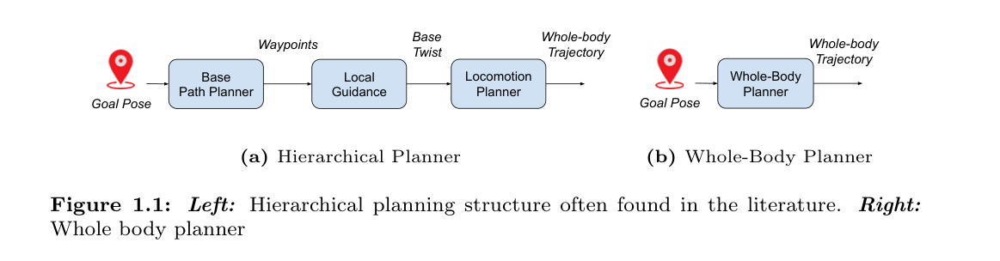
원문 Figure 1.1 · PDF p.26 — Figure 1.1: Left: Hierarchical planning structure often found in the literature. Right: Whole body planner
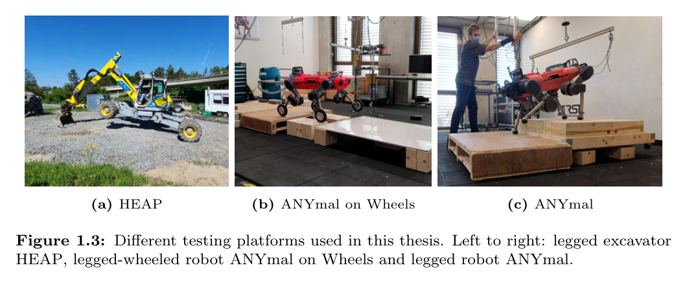
원문 Figure 1.3 · PDF p.42 — Figure 1.3: Different testing platforms used in this thesis. Left to right: legged excavator HEAP, legged-wheeled robot ANYmal on Wheels and legged robot ANYmal.
선행 연구의 한계
차체 SE(2) 경로와 limb motion을 순차적으로 풀면 좁은 통로·큰 gap에서 전신 자유도를 활용한 해를 놓치거나 접촉일정이 실행 불가능해진다.
31 DoF 전체를 naive sampling하면 차원의 저주가 심하고, 연속 궤적최적화만 사용하면 장애물·접촉전환의 지역최소와 초기값에 민감하다.
고대역 torque-control 사족용 WBC를 그대로 유압 굴착기에 적용할 수 없으며 wheel speed 미측정, 관절별 torque/position 혼합, 낮은 bandwidth가 추종을 제한한다.
고정 contact schedule이나 주기 gait는 stepping stone·arm support·좁은 bridge에서 필요한 비주기 접촉순서를 발견하지 못한다.
고도지도는 실용적이지만 overhang과 3D confined contact를 표현하지 못하고, 지형 gradient 불연속은 optimizer convergence를 악화시킨다.
HEAP 31 DoF를 직접 다루는 전신 궤적최적화와 robust support polygon, no-lateral-slip, shovel orientation 제약으로 driving·stepping·arm-supported motion을 발견한다.
혼합 torque/velocity 유압장비에 inverse kinematics와 rigid-body inverse dynamics를 계층화한 whole-body controller를 배치해 전신 계획을 실제 장비에서 실행한다.
base는 저차원으로 sampling하고 각 limb의 충돌·도달성은 offline roadmap으로 검사한 뒤 전신 trajectory optimization으로 정제하는 hybrid planner를 만든다.
LSTP를 통해 sampling 기반 장기 contact/keyframe 계획과 DMS-MPC 단기 refinement, VMC/WBC를 결합하고 ANYmal·ANYmal on Wheels·HEAP에서 실시간성과 일반성을 검증한다.
2.방법론 및 시스템 구성
초기 연구의 optimization formulation은 base와 모든 joint trajectory를 Hermite spline으로 표현하고 접촉 여부, support polygon, collision, rolling/no-slip, shovel orientation을 연속 제약으로 둔다. contact indicator까지 최적화해 driving과 stepping을 함께 탐색하며, 지지다각형 내부에 투영된 질량중심이 epsilon margin을 두도록 해 모델·추종오차에 강건성을 확보한다. 31 DoF를 직접 최적화하므로 crab steering, cusp, diagonal drive, leg step, arm contact가 별도 behavior library 없이 나타난다.
그러나 전역 장애물과 나쁜 초기값에는 optimization만으로 부족하다. hybrid planner는 base pose를 SE(2)/SE(3)의 낮은 차원에서 RRT류로 샘플링하고, 각 base pose에 가능한 leg·arm configuration을 offline probabilistic roadmap에서 빠르게 조회한다. one-step motion을 20 cm 이하 subnode로 나누고 full-support state, latest contact break, earliest contact creation을 구한 다음 swing limb 순열을 열거해 안정한 contact schedule을 만든다. 탐색된 whole-body keyframe sequence를 continuous trajectory optimization에 초기값으로 전달한다.
LSTP는 이 개념을 online 구조로 발전시킨다. long-term SBP가 전역 base path, contact schedule, whole-body keyframes를 만들고, short-term MPC는 전체 계획 중 가까운 snippet만 받아 Direct Multiple Shooting으로 관절·base trajectory를 반복 정제한다. point-foot ANYmal은 1 s horizon과 0.01 s discretization을 사용하고, HEAP은 최대 15 s horizon, 31 state와 36 control의 kinematic MPC를 사용한다. SBP가 먼 위상을 안내하므로 MPC가 straight-line 지역최소나 잘못된 foothold로 빠질 위험을 줄인다.
terrain preprocessing은 3 cm elevation grid에서 local plane normal, filtered elevation, traversability, 2D/3D signed-distance field를 만든다. ANYmal의 normal radius는 0.1 m, filtered elevation은 0.4 m이며 HEAP은 각각 0.3 m와 2.5 m다. negative obstacle에는 neighborhood elevated mean을 써 gap·hole을 보수적으로 표시한다. 20×20 m map도 6 threads에서 1 Hz 이상 처리하며, 8×8 m의 3D SDF 평균 계산은 115 ms다.
제어는 플랫폼에 따라 달라진다. ANYmal은 25 Hz MPC와 400 Hz WBC로 high-bandwidth torque actuator를 제어한다. HEAP은 정확한 torque control이 불가능한 혼합 actuator 때문에 VMC가 지형 불일치에 순응하고 kinematic MPC가 장기 reference를 추종한다. filtering·wheel velocity loop·state estimation을 함께 쓰며 MPC는 작업에 따라 5~20 Hz로 재계획한다. 이 분리는 정교한 hydraulic dynamics를 MPC 안에 넣지 않고도 실제 장비의 wheel drift와 uneven terrain을 흡수한다.
처리 파이프라인
1
현장 지도와 traversability 전처리
LiDAR·IMU·GNSS 또는 leg kinematics를 융합해 3 cm elevation map을 만들고 local plane fitting으로 normal과 filtered elevation을 계산한다. slope·roughness·elevated mean으로 traversability를 정하고 SDF를 생성해 collision 및 foothold query에 제공한다.
2
offline limb roadmap 구성
각 leg와 arm의 joint configuration, 도달 가능한 endpoint, self/environment collision 정보를 미리 샘플링해 PRM/CDRM을 만든다. HEAP은 leg 약 300 vertices와 arm 3000 vertices 규모, ANYmal은 leg별 5000 vertices를 사용하며 runtime에는 terrain transform과 근접검색만 수행한다.
3
저차원 base sampling과 전신 상태 복원
RRT/RRT*가 base pose를 샘플하고 Reeds-Shepp 또는 straight connection으로 최소 회전반경을 반영한다. 각 pose에서 roadmap으로 full-support limb configuration을 찾고 collision·stability를 검사해 고차원 robot state를 빠르게 복원한다.
4
접촉일정과 one-step motion 생성
base connection을 20 cm 이하 subnode로 분할하고 limb별 latest contact break와 earliest contact creation을 계산한다. swing limb 순열을 최대 4!=24개 열거하면서 한 번에 한 limb만 swing하고 relaxed support polygon을 만족하는 contact schedule을 선택한다.
5
trajectory optimization과 MPC refinement
SBP의 keyframe·contact schedule을 Hermite spline 또는 OCP 초기값으로 변환한다. offline 단계는 IPOPT/SQP 등으로 전체 궤적을 정제하고, LSTP는 가까운 1~15초 snippet을 DMS-MPC로 반복 최적화하여 rolling, collision, joint, stability constraints를 만족한다.
6
WBC/VMC 실행과 재계획
ANYmal에서는 terrain-adaptive WBC가 400 Hz로 contact force와 joint torque를 실행한다. HEAP에서는 VMC가 base leveling과 contact compliance를 맡고 velocity/position loops가 유압관절을 구동한다. 실행이 plan보다 drift하면 MPC가 5~20 Hz로 보정하고 SBP는 local map을 갱신해 다음 전역 segment를 재계획한다.
원문 수식과 의미
식 (6.24) local tangent plane
n_i^x d_x+n_i^y d_y+(h-\tilde h_i)=0
grid cell 주변 지형을 평면으로 근사하여 normal과 filtered elevation을 얻는 기본식이다.
반경 안의 고도 샘플에서 local surface normal과 평균 고도를 최소제곱으로 계산해 traversability 및 base pose selection에 사용한다.
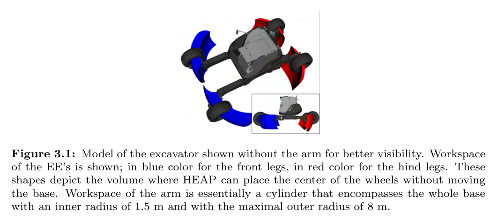
원문 Figure 3.1 · PDF p.114 — Figure 3.1: Model of the excavator shown without the arm for better visibility. Workspace of the EE’s is shown; in blue color for the front legs, in red color for the hind legs. These shapes depict the volume where HEAP can place the center of the wheels without moving the base. Workspace of the arm is essentially a cylinder that encompasses the whole base with an inner radius of 1.5 m and with the maximal outer radius of 8 m.
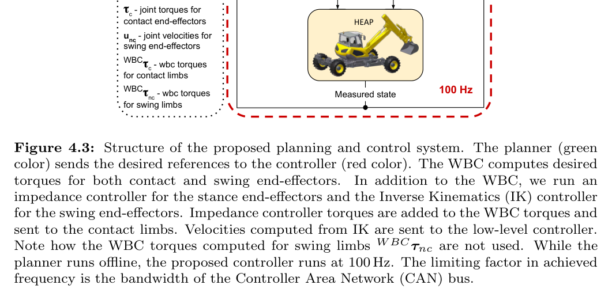
원문 Figure 4.3 · PDF p.134 — Figure 4.3: Structure of the proposed planning and control system. The planner (green color) sends the desired references to the controller (red color). The WBC computes desired torques for both contact and swing end-effectors. In addition to the WBC, we run an impedance controller for the stance end-effectors and the Inverse Kinematics (IK) controller for the swing end-effectors. Impedance controller torques are added to the WBC torques and sent to the contact limbs. Velocities computed from IK are sent to the low-level controller. Note how the WBC torques computed for swing limbs W BCτnc are not used. While the planner runs offline, the proposed controller runs at 100 Hz. The limiting factor in achieved frequency is the bandwidth of the Controller Area Network (CAN) bus.
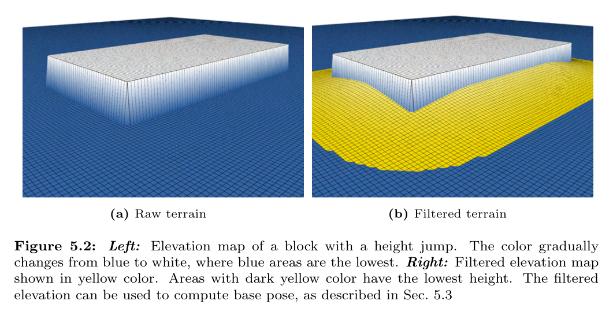
원문 Figure 5.2 · PDF p.151 — Figure 5.2: Left: Elevation map of a block with a height jump. The color gradually changes from blue to white, where blue areas are the lowest. Right: Filtered elevation map shown in yellow color. Areas with dark yellow color have the lowest height. The filtered elevation can be used to compute base pose, as described in Sec. 5.3
원문 Figure 6.18 · PDF p.198 — Fig. 6.18 depicts the system architecture. The workflow starts from LPC re- ceiving a goal pose, which is then sent to the NPC. Subsequently, the NPC requests a local elevation map from Jetson and performs pre-processing. SBP plans a trajectory using the processed map and sends it to the MPC for track- ing.
3.핵심 기술
전신 contact를 직접 다루는 궤적최적화
HEAP을 차체와 arm의 별도 subsystem으로 쪼개지 않고 31 DoF 전부를 최적화한다. robust support polygon, no-lateral-slip, joint/velocity, collision, shovel orientation을 함께 넣어 planner가 상황에 따라 주행·stepping·arm support를 선택한다. 3 m gap과 1 m block, 90도 방향전환에서 사람이 명시하지 않은 전신 협응을 얻는다.
초기 offline planner는 단순 driving에서 horizon보다 약 10배 빠르게, 장애물 동작에서 약 2.5배 빠르게 계산한다. 접촉계획이 포함된 7초 구간은 약 15초가 걸리기도 해 완전 online에는 부족했지만, 이후 sampling initialization과 MPC로 무엇을 개선해야 하는지 명확히 보여줬다.
31 DoF HEAP에서 base·legs·cabin·arm을 같은 decision space로 최적화한다.
3 m gap, 1 m obstacle, 90° turn과 crab/cusp driving을 시뮬레이션한다.
robust support polygon margin이 실기체 오차에도 정적 안정성을 유지한다.
roadmap이 고차원 sampling 비용을 제거하는 hybrid planner
핵심 아이디어는 base pose만 online으로 샘플링하고 limb configuration은 offline roadmap에서 조회하는 것이다. HEAP leg 300 vertices와 arm 3000 vertices의 roadmap 생성에는 약 30분이 들지만 대부분 arm 계산이며 runtime planning에서는 재사용된다. rough terrain, gap, wall/step에서 linear initialization보다 높은 성공률을 유지하고 RRT 계획시간을 4초로 고정한 비교에서도 어려운 지형의 해를 찾는다.
탐색은 해의 위상을 찾고 최적화는 부드러움과 정확한 제약을 회복한다. 예시에서 shortest-duration objective는 114.98초, driving-preferred objective는 156.33초의 서로 다른 전신 동작을 만든다. 이는 동일 환경에서도 cost shaping으로 주행 우선·stepping 우선 전략을 바꿀 수 있음을 보여준다.
HEAP roadmap은 leg 300, arm 3000 vertices이며 generation 약 30분이다.
HEAP의 wheel speed는 직접 측정·개별 제어가 어렵고, actuator bandwidth와 dynamics model도 전기 사족보다 부정확하다. 논문은 dynamic MPC를 과도하게 복잡하게 만드는 대신 kinematic MPC가 장기 motion constraint를 풀고 VMC가 접촉 순응성과 base leveling을 담당하게 한다. flat-ground plan을 주더라도 한쪽 hole과 반대쪽 hill에서 좌우 leg를 반대로 움직여 chassis를 수평에 가깝게 유지한다.
HEAP MPC는 5~20 Hz, VMC 및 filtering/velocity loop는 더 빠른 하위주기로 실행된다.
15 s out of 약 250 s trajectory snippet을 MPC가 추종해 전역 최적성 일부와 실시간 보정을 교환한다.
원문 Figure 3.5 · PDF p.119 — Figure 3.5: Subfig. 1 shows HEAP repositioning itself diagonally from (0, 0) m to (10, 10) m. Subfig. 2a-2d shows HEAP performing cusps to arrive at a goal pose 5 m to the left. We do not impose any constraints on the final EE configuration. Blue line shows the CoM trajectory.
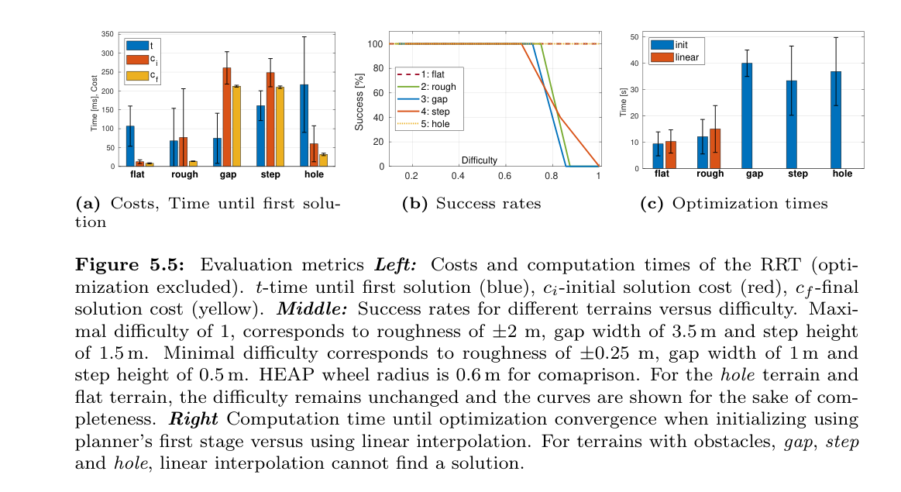
원문 Figure 5.5 · PDF p.157 — Figure 5.5: Evaluation metrics Left: Costs and computation times of the RRT (opti- mization excluded). t-time until first solution (blue), ci-initial solution cost (red), cf-final solution cost (yellow). Middle: Success rates for different terrains versus difficulty. Maxi- mal difficulty of 1, corresponds to roughness of ±2 m, gap width of 3.5 m and step height of 1.5 m. Minimal difficulty corresponds to roughness of ±0.25 m, gap width of 1 m and step height of 0.5 m. HEAP wheel radius is 0.6 m for comaprison. For the hole terrain and flat terrain, the difficulty remains unchanged and the curves are shown for the sake of com- pleteness. Right Computation time until optimization convergence when initializing using planner’s first stage versus using linear interpolation. For terrains with obstacles, gap, step and hole, linear interpolation cannot find a solution.
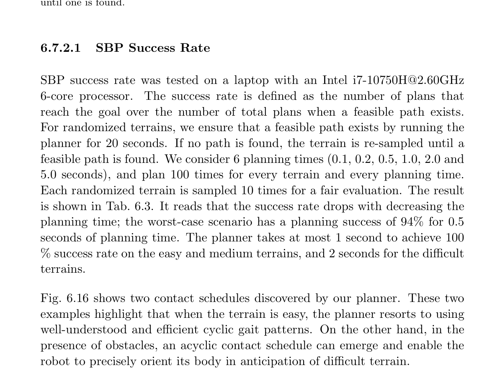
원문 Figure 6.16 · PDF p.195 — Fig. 6.16 shows two contact schedules discovered by our planner. These two examples highlight that when the terrain is easy, the planner resorts to using well-understood and efficient cyclic gait patterns. On the other hand, in the presence of obstacles, an acyclic contact schedule can emerge and enable the robot to precisely orient its body in anticipation of difficult terrain.
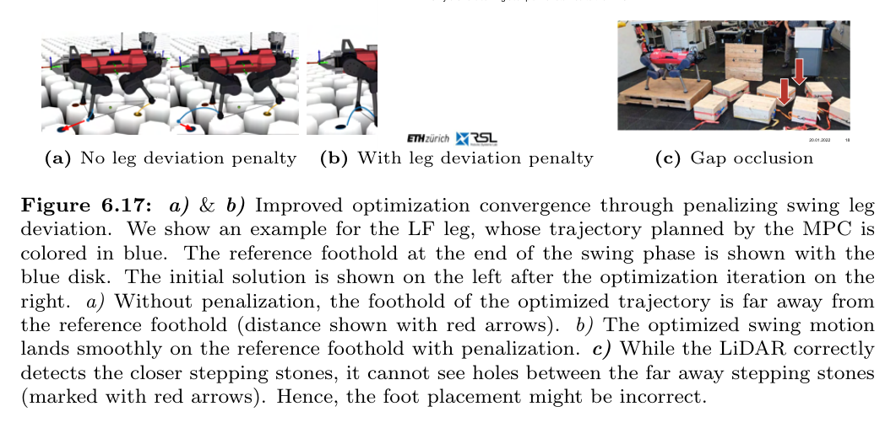
원문 Figure 6.17 · PDF p.198 — Figure 6.17: a) & b) Improved optimization convergence through penalizing swing leg deviation. We show an example for the LF leg, whose trajectory planned by the MPC is colored in blue. The reference foothold at the end of the swing phase is shown with the blue disk. The initial solution is shown on the left after the optimization iteration on the right. a) Without penalization, the foothold of the optimized trajectory is far away from the reference foothold (distance shown with red arrows). b) The optimized swing motion lands smoothly on the reference foothold with penalization. c) While the LiDAR correctly detects the closer stepping stones, it cannot see holes between the far away stepping stones (marked with red arrows). Hence, the foot placement might be incorrect.
4.실험 결과
실험 환경·장비·데이터
플랫폼은 point-foot ANYmal, non-steerable wheel의 ANYmal on Wheels, 약 12,300 kg·31 DoF HEAP 세 종류다.
ANYmal은 앞뒤 Robosense RS-Bpearl LiDAR 두 대, i7-8850H 6-core onboard PCs 두 대, Jetson AGX Xavier를 사용하며 elevation mapping 20 Hz, MPC 25 Hz, WBC 400 Hz다.
HEAP은 AMD Ryzen 9 5900HX 3.3 GHz planning laptop, Leica iCON iXE3 RTK GNSS, chassis/cabin IMU 두 개와 two-state information filter를 사용한다.
simulation terrain은 20×20 m, 3 cm resolution이며 gap·obstacle·ramp·stairs·maze·bricks·terrace·stepping stones의 8종과 easy/medium/hard 3난도를 사용한다.
실험 프로토콜
ANYmal SBP는 0.1·0.2·0.5·1·2·5초 planning time마다 terrain/난도별 100회 계획하고 random terrain은 각 10개 sample을 사용한다.
실차 통과 가능 gap·step 치수, motion duration, maximum velocity
계획 horizon 대비 계산시간, controller tracking 및 terrain adaptation의 정성·정량 결과
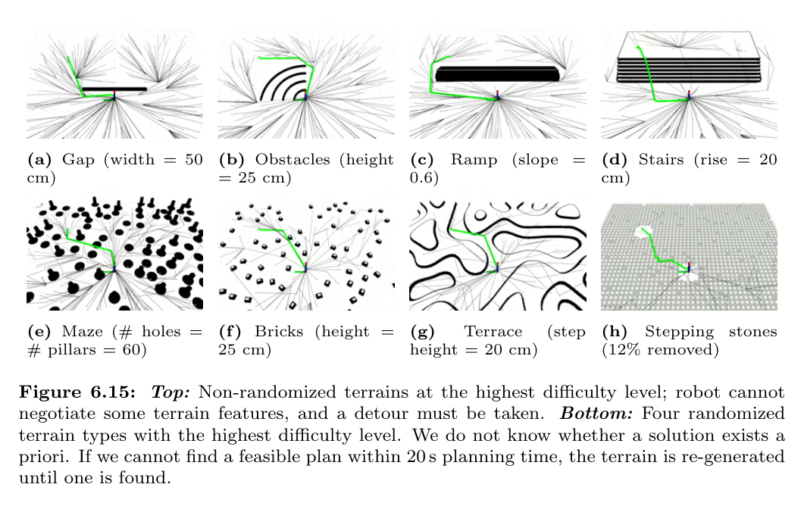
원문 Figure 6.15 · PDF p.195 — Figure 6.15: Top: Non-randomized terrains at the highest difficulty level; robot cannot negotiate some terrain features, and a detour must be taken. Bottom: Four randomized terrain types with the highest difficulty level. We do not know whether a solution exists a priori. If we cannot find a feasible plan within 20 s planning time, the terrain is re-generated until one is found.
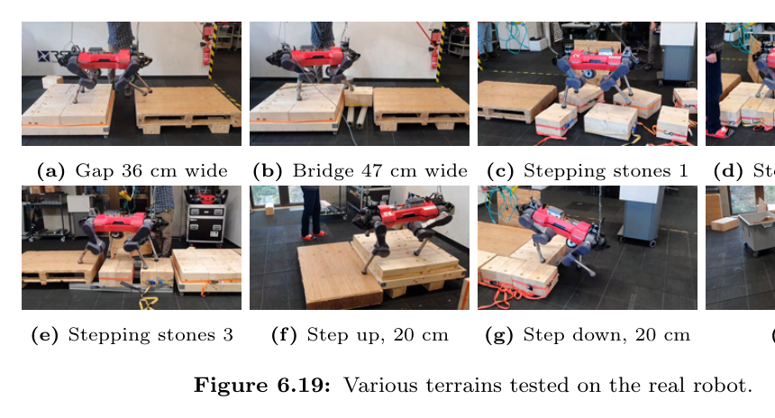
원문 Figure 6.19 · PDF p.200 — Figure 6.19: Various terrains tested on the real robot.
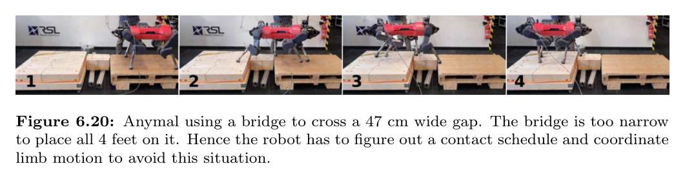
원문 Figure 6.20 · PDF p.200 — Figure 6.20: Anymal using a bridge to cross a 47 cm wide gap. The bridge is too narrow to place all 4 feet on it. Hence the robot has to figure out a contact schedule and coordinate limb motion to avoid this situation.
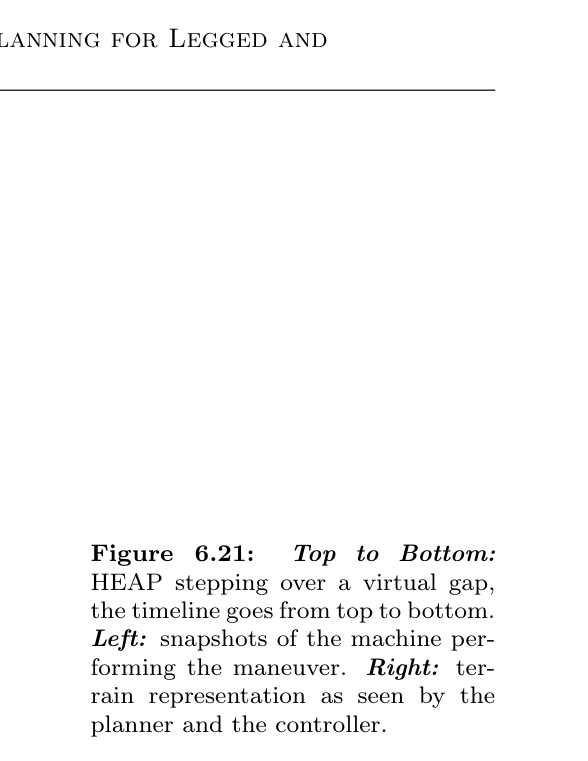
원문 Figure 6.21 · PDF p.202 — Figure 6.21: Top to Bottom: HEAP stepping over a virtual gap, the timeline goes from top to bottom. Left: snapshots of the machine per- forming the maneuver. Right: ter- rain representation as seen by the planner and the controller.
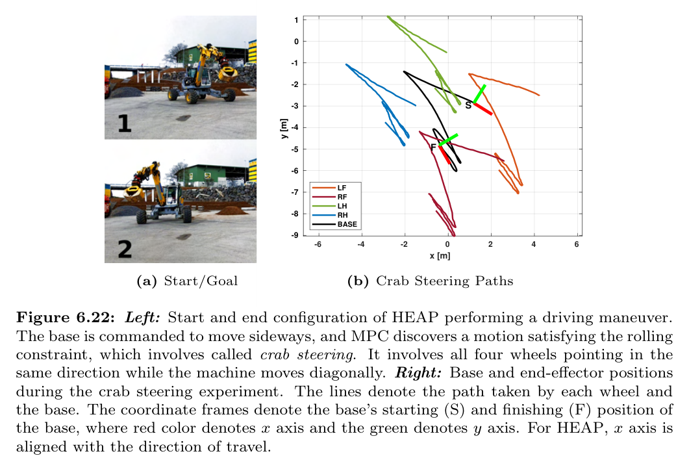
원문 Figure 6.22 · PDF p.203 — Figure 6.22: Left: Start and end configuration of HEAP performing a driving maneuver. The base is commanded to move sideways, and MPC discovers a motion satisfying the rolling constraint, which involves called crab steering. It involves all four wheels pointing in the same direction while the machine moves diagonally. Right: Base and end-effector positions during the crab steering experiment. The lines denote the path taken by each wheel and the base. The coordinate frames denote the base’s starting (S) and finishing (F) position of the base, where red color denotes x axis and the green denotes y axis. For HEAP, x axis is aligned with the direction of travel.
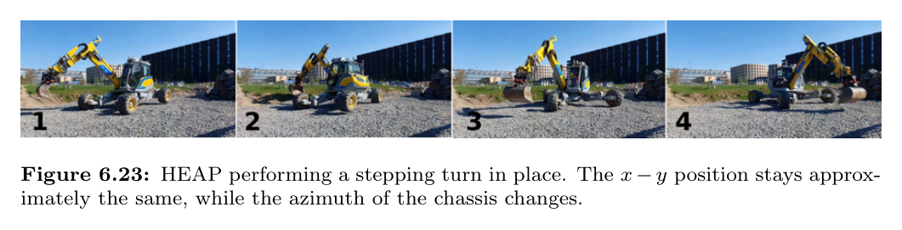
원문 Figure 6.23 · PDF p.204 — Figure 6.23: HEAP performing a stepping turn in place. The x −y position stays approx- imately the same, while the azimuth of the chassis changes.
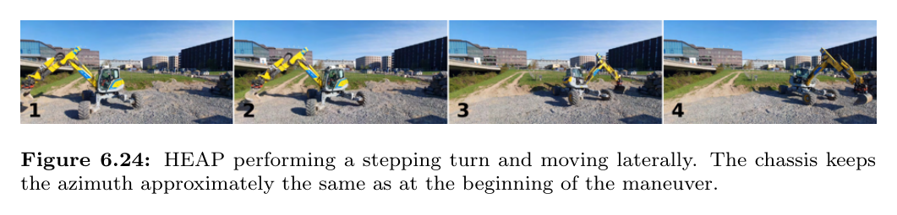
원문 Figure 6.24 · PDF p.204 — Figure 6.24: HEAP performing a stepping turn and moving laterally. The chassis keeps the azimuth approximately the same as at the beginning of the maneuver.
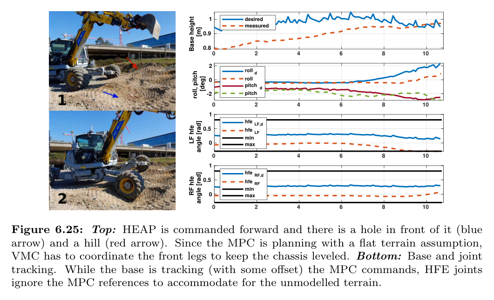
원문 Figure 6.25 · PDF p.204 — Figure 6.25: Top: HEAP is commanded forward and there is a hole in front of it (blue arrow) and a hill (red arrow). Since the MPC is planning with a flat terrain assumption, VMC has to coordinate the front legs to keep the chassis leveled. Bottom: Base and joint tracking. While the base is tracking (with some offset) the MPC commands, HFE joints ignore the MPC references to accommodate for the unmodelled terrain.
핵심 결과 해석
초기 full-body trajectory optimization은 HEAP에서 3 m gap과 1 m block, crab/diagonal drive, cusp, 90도 turn을 계획했다. 일반 driving은 계획 horizon보다 약 10배 빠르게, 장애물 동작은 약 2.5배 빠르게 계산됐으나 contact-rich 7초 horizon 사례는 약 15초가 걸려 offline 성격이 남았다. 계층 whole-body controller를 100 Hz 수준으로 통합한 실차에서는 driving plan을 약 1초, stepping/turn plan을 10~15초에 만들고 혼합 torque/position joints로 실행했다.
hybrid sampling/optimization 장에서는 roadmap 기반 initial guess가 rough terrain, gap, step/wall의 어려운 조건에서 linear baseline의 실패를 회복했다. RRT 계획은 각 trial 4초로 제한됐고, 성공한 10회 평균을 사용했다. HEAP roadmap generation은 약 30분이며 99% 이상이 arm roadmap 계산이다. 동일 경로에서도 shortest-duration cost는 114.98초, driving-preferred cost는 156.33초 계획을 만들어 비용설계가 contact mode를 바꿀 수 있음을 보였다.
최종 LSTP의 ANYmal SBP는 hard terrain에서 0.5초 계획의 최저 성공률이 maze와 stepping stones의 0.94였고, 2초면 모든 terrain/difficulty에서 100%였다. easy와 medium은 최대 1초면 전부 성공했다. ANYmal on Wheels는 같은 tuning을 쓰면서 성공률이 조금 낮아 hard 0.5초에서 stepping stones 0.91, bricks 0.94 등이었고, 모든 hard case의 100% 도달에는 5초가 필요했다. swing-leg deviation penalty가 있는 MPC는 모든 평가에서 수렴했으나 없으면 stepping stones에서 30% 확률로 발산했다.
ANYmal 실차는 36 cm gap을 건넜는데 simulation 40 cm에 근접하고 제조사 사양 30 cm보다 크다. 47 cm gap은 직접 넘지 않고 네 발을 모두 놓을 수 없는 좁은 bridge의 비주기 접촉을 찾아 통과했다. 20 cm step up/down, 세 stepping-stone 배치, straight-line이 dead end인 maze도 수행했다. 최대 기록속도는 약 20 cm/s이며 8×8 m local map을 갱신해 LiDAR 폐색으로 보이지 않던 먼 hole을 다음 계획에서 회피했다.
HEAP LSTP는 virtual gap을 arm support와 wheel/leg 협응으로 103초에 넘었다. 별도의 long-horizon MPC는 25초 prediction horizon에서 2.53 m sideways crab motion과 네 번의 방향전환을 발견해 46초에 실행했다. 약 30도씩 stepping해 chassis yaw를 약 108도 바꾸는 동작은 177초, 6.1 m lateral stepping은 266초였다. flat terrain을 가정한 planner에도 실제 한쪽 hole·반대쪽 hill에서 VMC가 좌우 HFE joint를 반대로 움직여 base leveling을 유지했다. 논문은 HEAP의 MPC 재계획이 5~20 Hz여도 이러한 저속 quasi-static 동작에 충분했다고 결론낸다.
정량 결과
평가 항목
정량 결과
조건·맥락
원문 근거
offline obstacle planning speed
plan length 대비 약 2.5× 빠름
HEAP 31-DoF gap crossing과 1 m block trajectory optimization
PDF p.121
roadmap generation
약 30 min, 99% 이상 arm 계산
HEAP leg 300 및 arm 3000 vertices 구성
PDF p.160
비용별 motion duration
114.98 s vs 156.33 s
shortest-duration과 driving-preferred objective
PDF p.159
terrain preprocessing
20×20 m, 3 cm map에서 1 Hz 이상
6-thread pipeline; 8×8 m 3D SDF 평균 115 ms
PDF p.194
ANYmal SBP 최악 0.5 s 성공률
0.94
hard maze 및 hard stepping stones; hard 전체 2 s에서 1.0
PDF p.197
MPC convergence
penalty 포함 100%; 제외 시 stepping stones 30% 발산
swing-leg joint deviation penalty ablation
PDF p.197
ANYmal 실차 gap
36 cm 통과
simulation 40 cm, manufacturer specification 30 cm
PDF p.199
HEAP virtual gap
103 s
SBP+MPC+arm support 실차 maneuver
PDF p.201
HEAP crab steering
2.53 m sideways, 46 s
25 s MPC horizon, 네 번 direction changes
PDF p.202
HEAP stepping maneuvers
108° turn 177 s; lateral 6.1 m 266 s
30° increment turn 및 sideways stepping
PDF p.203
실패 사례와 경계조건
optimization-only planner는 장애물과 복잡지형에서 초기값이 나쁘면 local minimum에 갇히며, contact-rich 장기 horizon 계산이 실시간보다 느리다.
swing-foot deviation cost가 없으면 stepping stones에서 MPC가 30% 확률로 잘못된 local minimum에 수렴하거나 발산한다.
LiDAR는 먼 negative obstacle 사이의 hole을 가려 잘못된 foothold를 계획할 수 있어 local-map 반복 재계획이 필요하다.
HEAP wheel speed를 측정하거나 개별 정밀제어할 수 없어 drift가 누적되고, arm·leg torque model도 hose/oil 질량 등을 정확히 반영하지 못한다.
height map은 overhang, ladder, crawl 같은 3D contact-rich motion을 표현하지 못한다.
전체 방법은 quasi-static contact를 전제로 하므로 trot·jump 같은 dynamic gait를 발견하지 못한다.
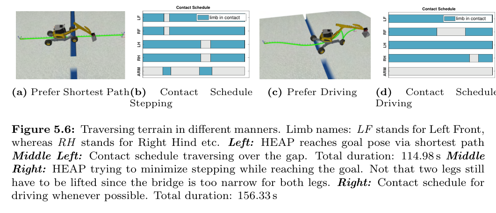
원문 Figure 5.6 · PDF p.159 — Figure 5.6: Traversing terrain in different manners. Limb names: LF stands for Left Front, whereas RH stands for Right Hind etc. Left: HEAP reaches goal pose via shortest path Middle Left: Contact schedule traversing over the gap. Total duration: 114.98 s Middle Right: HEAP trying to minimize stepping while reaching the goal. Not that two legs still have to be lifted since the bridge is too narrow for both legs. Right: Contact schedule for driving whenever possible. Total duration: 156.33 s
5.한계 및 향후 연구
현재 한계
LSTP initialization은 static gait만 생성하고 refinement도 그 contact schedule을 근본적으로 동적 gait로 바꾸지 못한다.
2.5D height map은 overhang·동굴·사다리 같은 수직/천장 접촉과 confined-space base pose를 표현할 수 없다.
Reeds-Shepp 연결은 최소 회전반경을 우아하게 반영하지만 quadruped의 straight connection보다 계산비가 크다.
HEAP actuator bandwidth와 sensing이 낮고 wheel velocity를 직접 측정·개별제어할 수 없어 정밀 추종에 한계가 있다.
traversability가 기하 heuristic 중심이어서 잘못 분류된 foothold가 불안정 전신구성을 만들 수 있다.
SBP와 MPC가 순차 실행되며 장기 최적성 일부를 포기하고 가까운 snippet만 추종한다.
향후 연구
static stability를 완화하고 switching-time optimization 또는 hierarchical dynamic model로 trot·jump 같은 dynamic gait를 다룬다.
3D map/implicit surface 표현을 도입해 overhang·ladder·confined contact와 효율적인 base pose selection을 연구한다.
GPU parallel sampling과 SBP 별도 thread를 사용해 MPC가 이전 plan 종료 전에 다음 global plan을 요청하도록 한다.
geometry와 vision을 결합한 learned traversability 및 raw terrain에서 6D base pose를 출력하는 RL sampling policy를 도입한다.
이 학위논문은 ETH 자율굴착 연구의 locomotion substrate다. Towards Autonomous Excavation Planning이나 dry-stone construction은 작업 pose 사이 이동을 주로 SE(2) navigation으로 다루지만, 진흙·ditch·stone pile 때문에 바퀴만으로 접근할 수 없는 현장에서는 LSTP가 leg와 arm을 사용해 새로운 feasible workspace를 만든다. 즉 상위 작업계획은 ‘어디서 파거나 놓을지’를 정하고 LSTP는 ‘그 자세에 전신으로 어떻게 도달할지’를 해결한다.
반대로 작업계획의 의미와 위험을 LSTP에 되돌려야 한다. ETHcavation의 사람·장비 dynamic map을 SBP collision layer로, adaptive hydraulic controller의 latent uncertainty를 MPC constraint margin으로, bucket-filling의 토양반력 추정을 contact feasibility로 연결하면 기하적으로 가능한 동작과 현장 안전·실행 가능성을 함께 판단할 수 있다.
Towards Autonomous Excavation Planning의 SE(2) base path가 실패하는 gap·soft ground 구간만 LSTP whole-body locomotion으로 승격할 수 있다.
dry-stone construction에서 leg와 arm을 함께 최적화하면 1톤 stone을 든 채 pile·wall 주변의 안정한 grasp/placement pose를 확보할 수 있다.
ETHcavation의 3D semantic obstacle와 사람 예측을 SBP/MPC cost에 넣어 비정적 현장 전신계획으로 확장할 수 있다.
Learning Adaptive Controller를 HEAP velocity loop에 결합하면 LSTP reference의 장비별 delay·dead-zone 추종오차를 줄일 수 있다.
roadmap lookup·MPC convergence·hydraulic uncertainty를 상위 scheduler에 노출하면 단순 거리 대신 실제 maneuver 시간과 성공확률로 작업순서를 정할 수 있다.
7.전체 그림·표
본문 핵심 위치에 배치하지 않은 원문 Figure와 Table을 원문 페이지 순서로 수록한다.
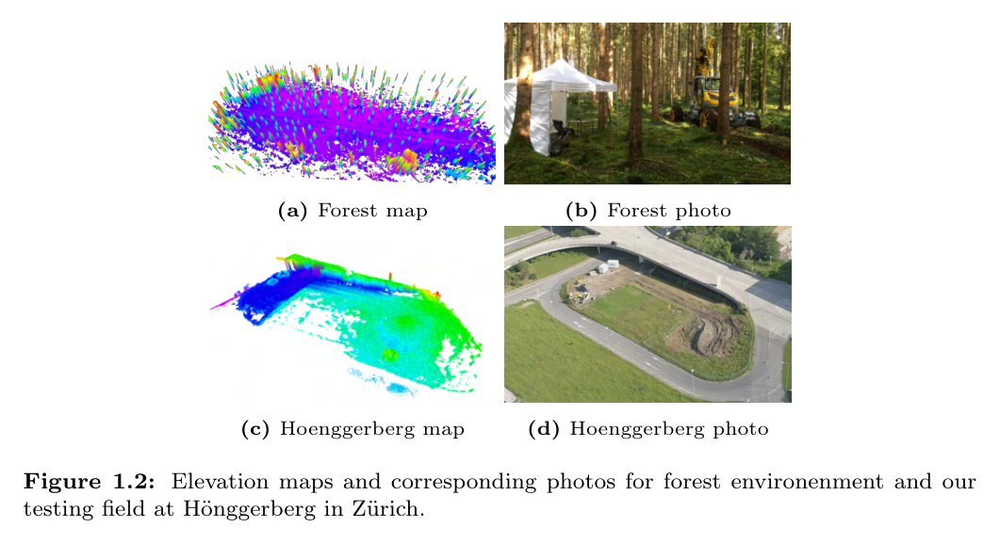
원문 Figure 1.2 · PDF p.31 — Figure 1.2: Elevation maps and corresponding photos for forest environenment and our testing field at H¨onggerberg in Z¨urich.
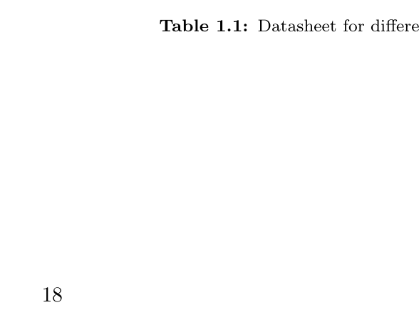
원문 Table 1.1 · PDF p.42 — Table 1.1: Datasheet for different robots used in this thesis.
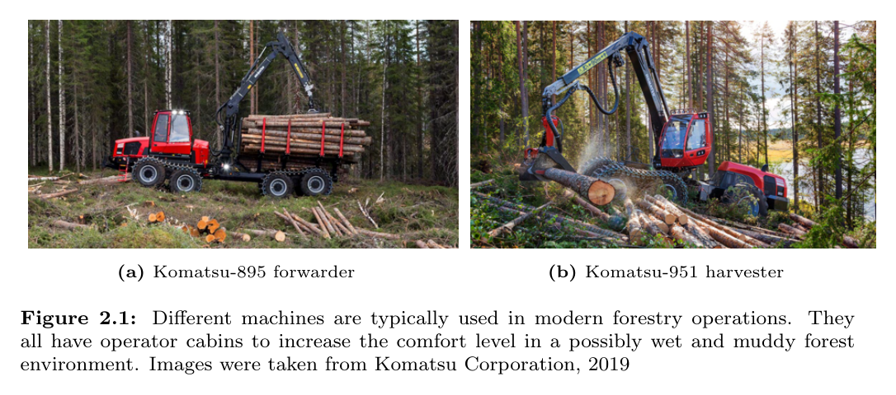
원문 Figure 2.1 · PDF p.45 — Figure 2.1: Different machines are typically used in modern forestry operations. They all have operator cabins to increase the comfort level in a possibly wet and muddy forest environment. Images were taken from Komatsu Corporation, 2019
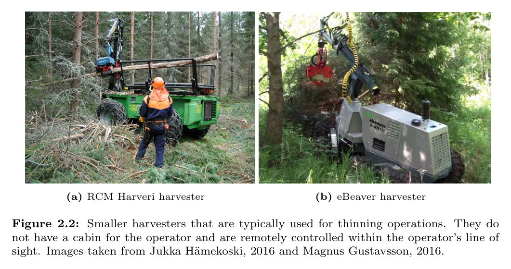
원문 Figure 2.2 · PDF p.45 — Figure 2.2: Smaller harvesters that are typically used for thinning operations. They do not have a cabin for the operator and are remotely controlled within the operator’s line of sight. Images taken from Jukka H¨amekoski, 2016 and Magnus Gustavsson, 2016.
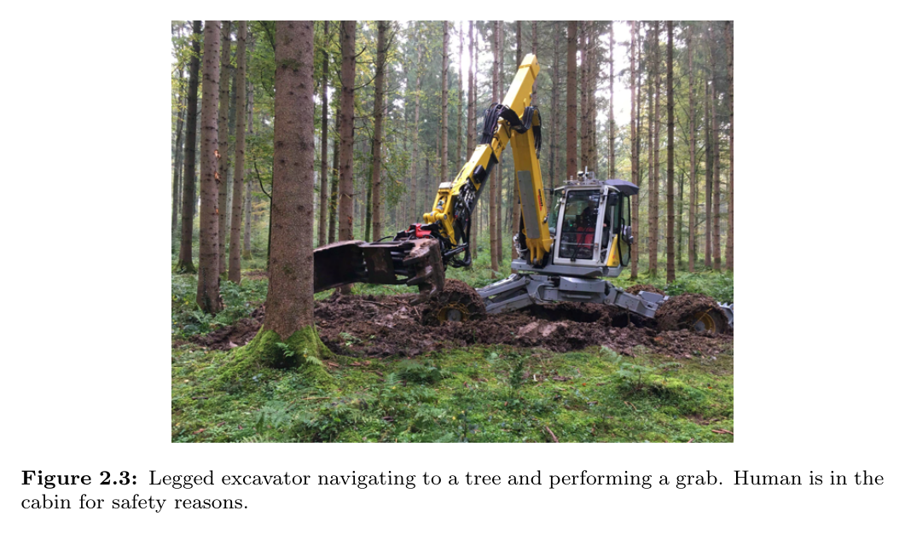
원문 Figure 2.3 · PDF p.47 — Figure 2.3: Legged excavator navigating to a tree and performing a grab. Human is in the cabin for safety reasons.
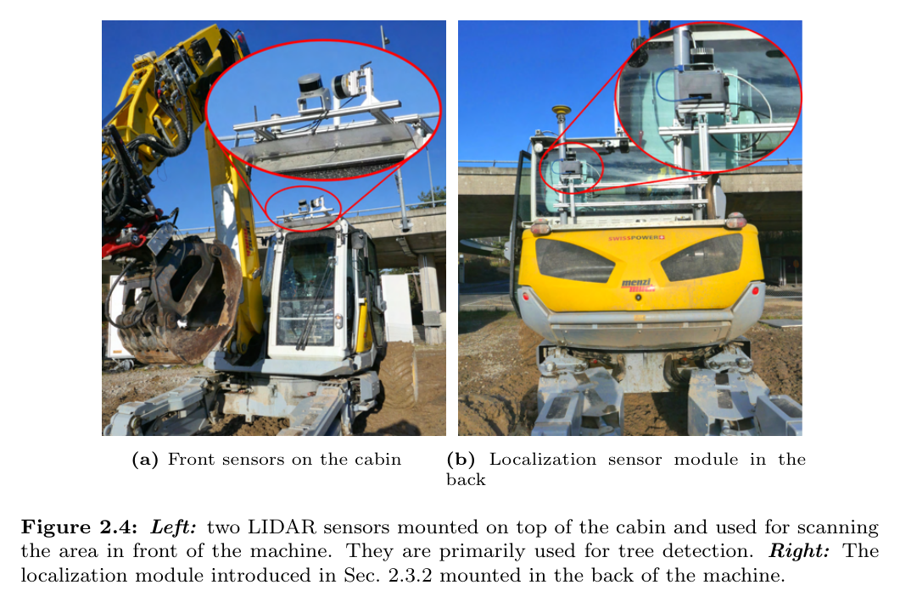
원문 Figure 2.4 · PDF p.52 — Figure 2.4: Left: two LIDAR sensors mounted on top of the cabin and used for scanning the area in front of the machine. They are primarily used for tree detection. Right: The localization module introduced in Sec. 2.3.2 mounted in the back of the machine.
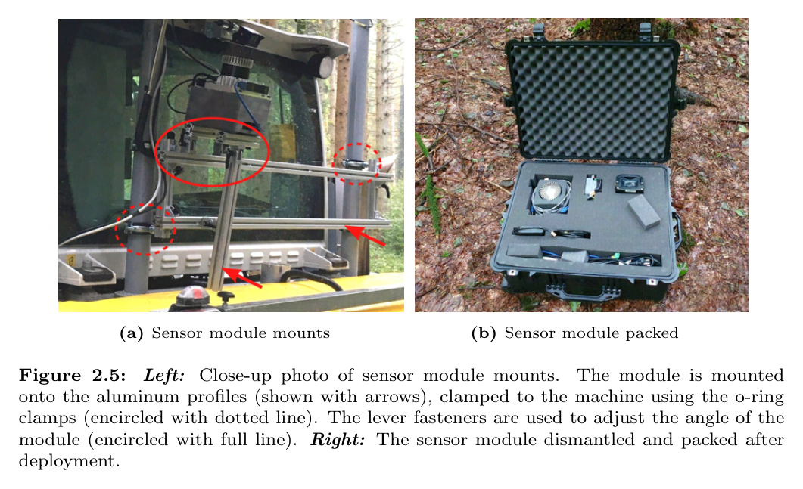
원문 Figure 2.5 · PDF p.53 — Figure 2.5: Left: Close-up photo of sensor module mounts. The module is mounted onto the aluminum profiles (shown with arrows), clamped to the machine using the o-ring clamps (encircled with dotted line). The lever fasteners are used to adjust the angle of the module (encircled with full line). Right: The sensor module dismantled and packed after deployment.
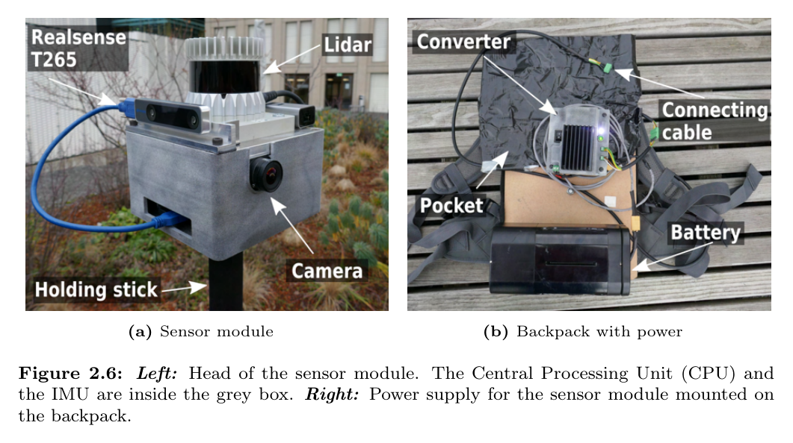
원문 Figure 2.6 · PDF p.54 — Figure 2.6: Left: Head of the sensor module. The Central Processing Unit (CPU) and the IMU are inside the grey box. Right: Power supply for the sensor module mounted on the backpack.
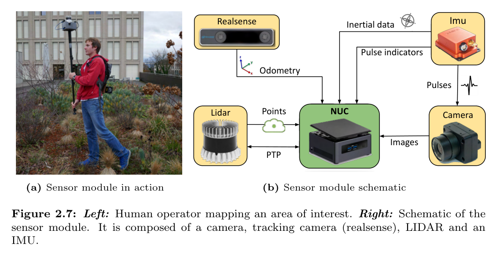
원문 Figure 2.7 · PDF p.55 — Figure 2.7: Left: Human operator mapping an area of interest. Right: Schematic of the sensor module. It is composed of a camera, tracking camera (realsense), LIDAR and an IMU.
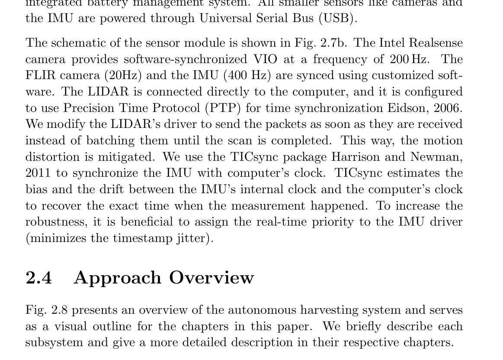
원문 Figure 2.8 · PDF p.56 — Fig. 2.8 presents an overview of the autonomous harvesting system and serves as a visual outline for the chapters in this paper. We briefly describe each subsystem and give a more detailed description in their respective chapters.
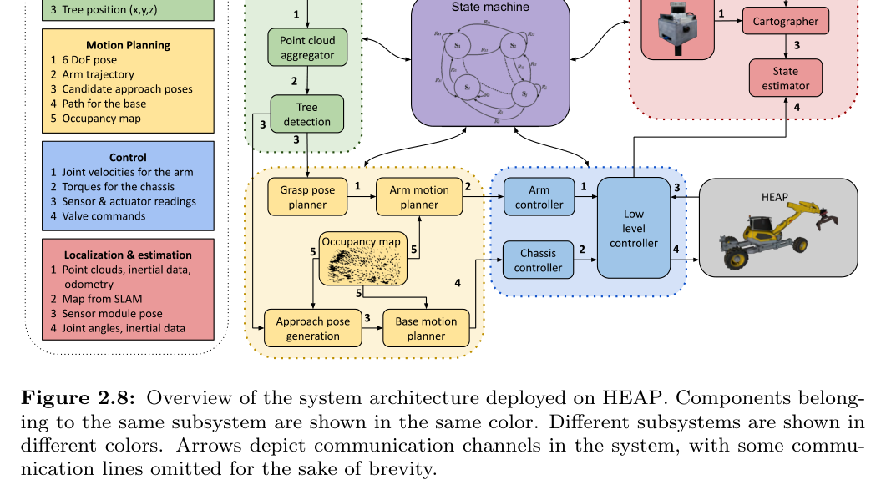
원문 Figure 2.8 · PDF p.57 — Figure 2.8: Overview of the system architecture deployed on HEAP. Components belong- ing to the same subsystem are shown in the same color. Different subsystems are shown in different colors. Arrows depict communication channels in the system, with some commu- nication lines omitted for the sake of brevity.
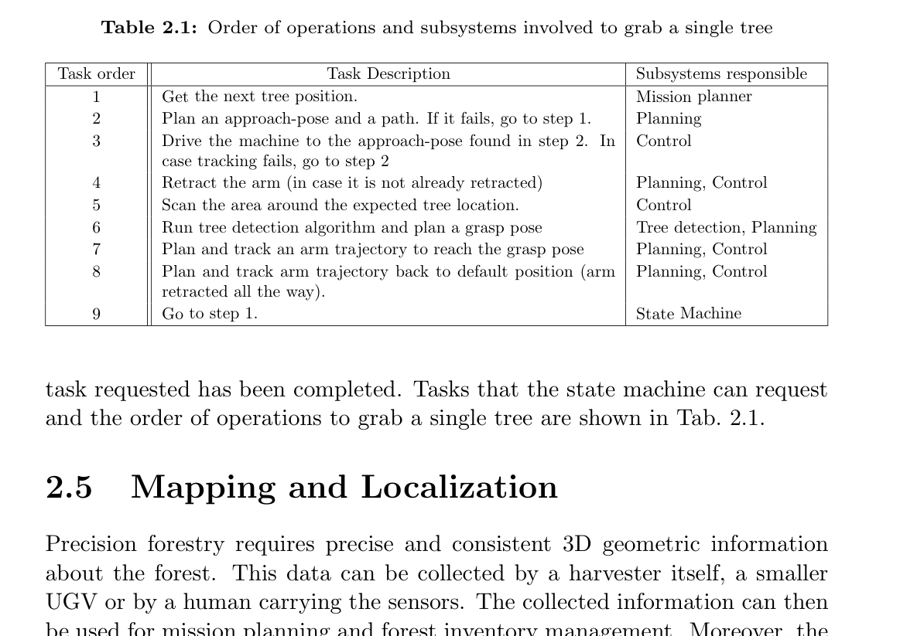
원문 Table 2.1 · PDF p.58 — Table 2.1: Order of operations and subsystems involved to grab a single tree
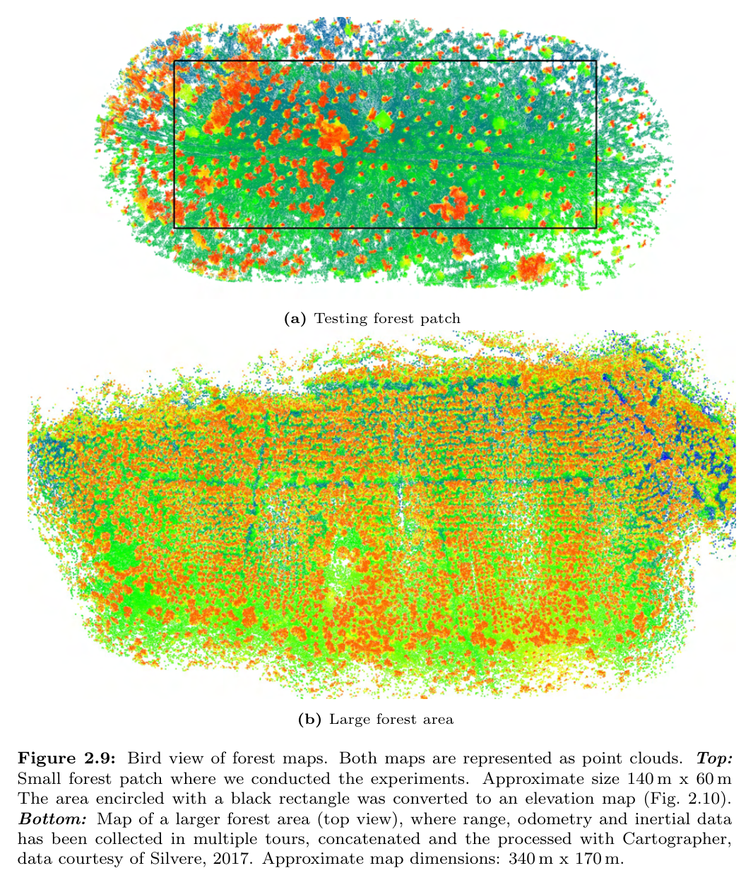
원문 Figure 2.9 · PDF p.61 — Figure 2.9: Bird view of forest maps. Both maps are represented as point clouds. Top: Small forest patch where we conducted the experiments. Approximate size 140 m x 60 m The area encircled with a black rectangle was converted to an elevation map (Fig. 2.10). Bottom: Map of a larger forest area (top view), where range, odometry and inertial data has been collected in multiple tours, concatenated and the processed with Cartographer, data courtesy of Silvere, 2017. Approximate map dimensions: 340 m x 170 m.
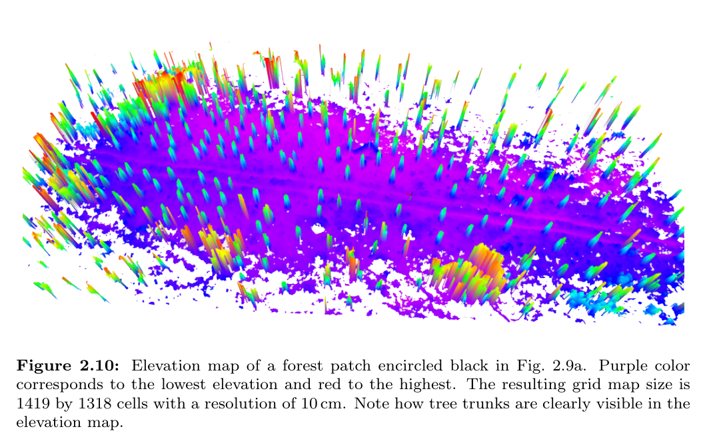
원문 Figure 2.10 · PDF p.62 — Figure 2.10: Elevation map of a forest patch encircled black in Fig. 2.9a. Purple color corresponds to the lowest elevation and red to the highest. The resulting grid map size is 1419 by 1318 cells with a resolution of 10 cm. Note how tree trunks are clearly visible in the elevation map.
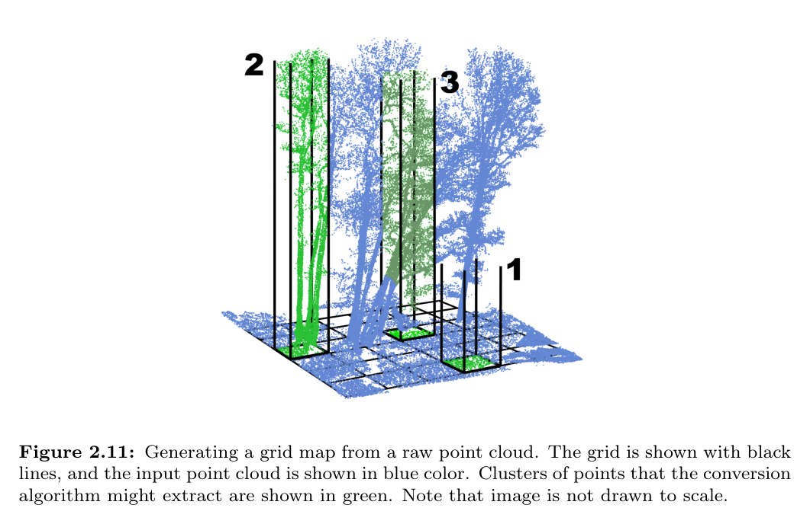
원문 Figure 2.11 · PDF p.63 — Figure 2.11: Generating a grid map from a raw point cloud. The grid is shown with black lines, and the input point cloud is shown in blue color. Clusters of points that the conversion algorithm might extract are shown in green. Note that image is not drawn to scale.
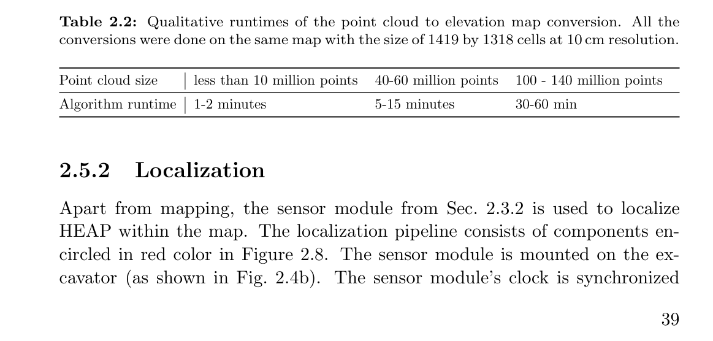
원문 Table 2.2 · PDF p.63 — Table 2.2: Qualitative runtimes of the point cloud to elevation map conversion. All the conversions were done on the same map with the size of 1419 by 1318 cells at 10 cm resolution.
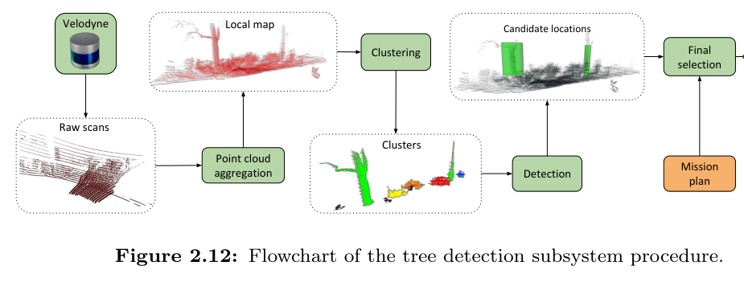
원문 Figure 2.12 · PDF p.65 — Figure 2.12: Flowchart of the tree detection subsystem procedure.
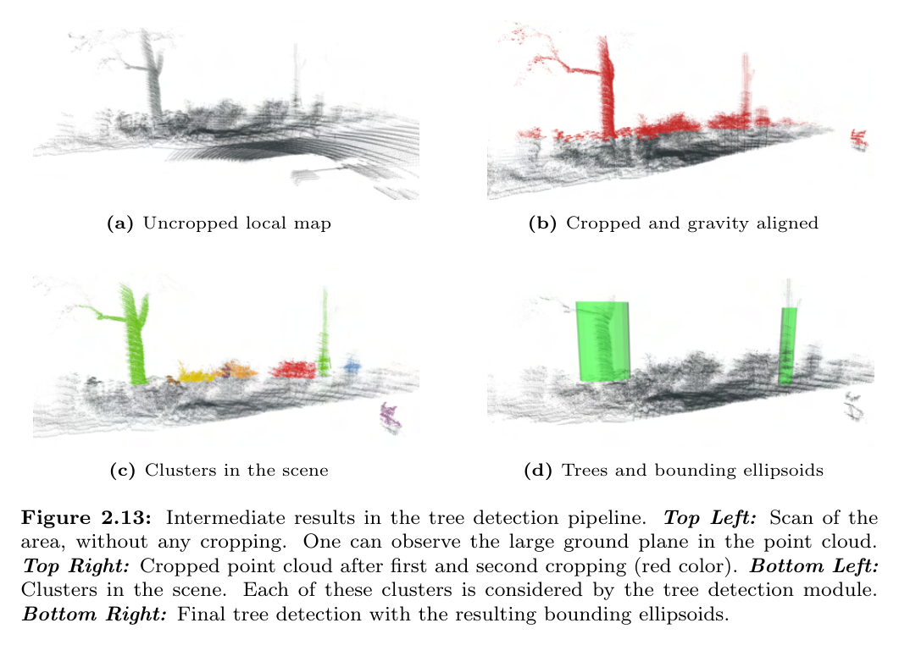
원문 Figure 2.13 · PDF p.66 — Figure 2.13: Intermediate results in the tree detection pipeline. Top Left: Scan of the area, without any cropping. One can observe the large ground plane in the point cloud. Top Right: Cropped point cloud after first and second cropping (red color). Bottom Left: Clusters in the scene. Each of these clusters is considered by the tree detection module. Bottom Right: Final tree detection with the resulting bounding ellipsoids.
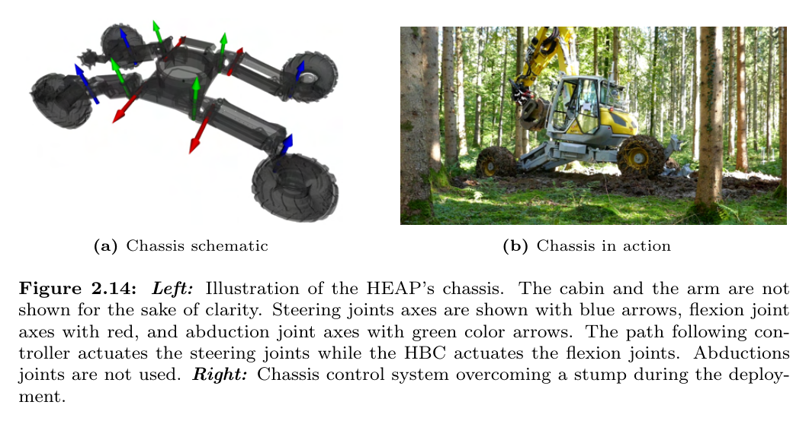
원문 Figure 2.14 · PDF p.68 — Figure 2.14: Left: Illustration of the HEAP’s chassis. The cabin and the arm are not shown for the sake of clarity. Steering joints axes are shown with blue arrows, flexion joint axes with red, and abduction joint axes with green color arrows. The path following con- troller actuates the steering joints while the HBC actuates the flexion joints. Abductions joints are not used. Right: Chassis control system overcoming a stump during the deploy- ment.
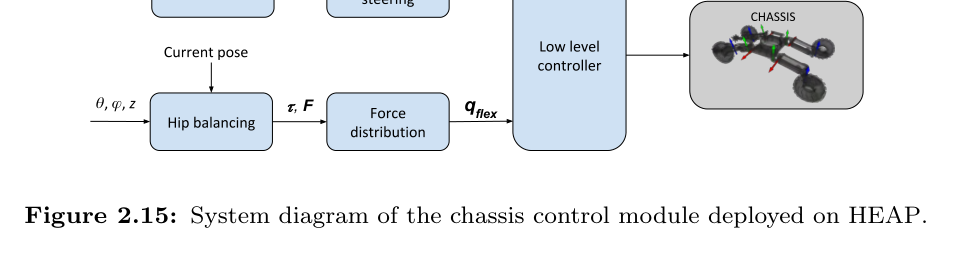
원문 Figure 2.15 · PDF p.68 — Figure 2.15: System diagram of the chassis control module deployed on HEAP.
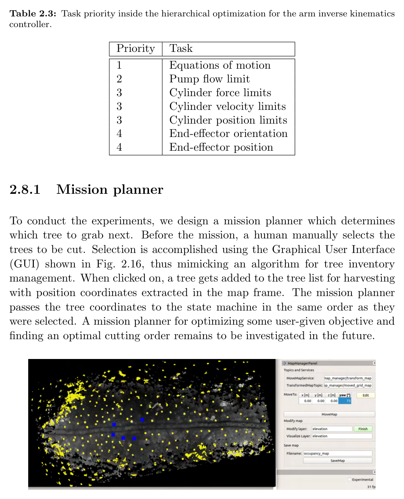
원문 Table 2.3 · PDF p.70 — Table 2.3: Task priority inside the hierarchical optimization for the arm inverse kinematics controller.
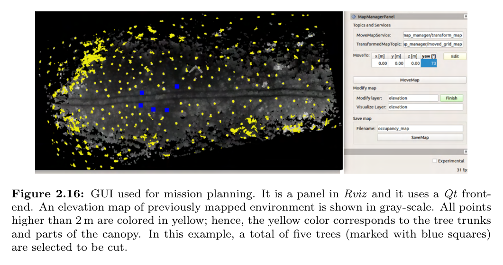
원문 Figure 2.16 · PDF p.70 — Figure 2.16: GUI used for mission planning. It is a panel in Rviz and it uses a Qt front- end. An elevation map of previously mapped environment is shown in gray-scale. All points higher than 2 m are colored in yellow; hence, the yellow color corresponds to the tree trunks and parts of the canopy. In this example, a total of five trees (marked with blue squares) are selected to be cut.
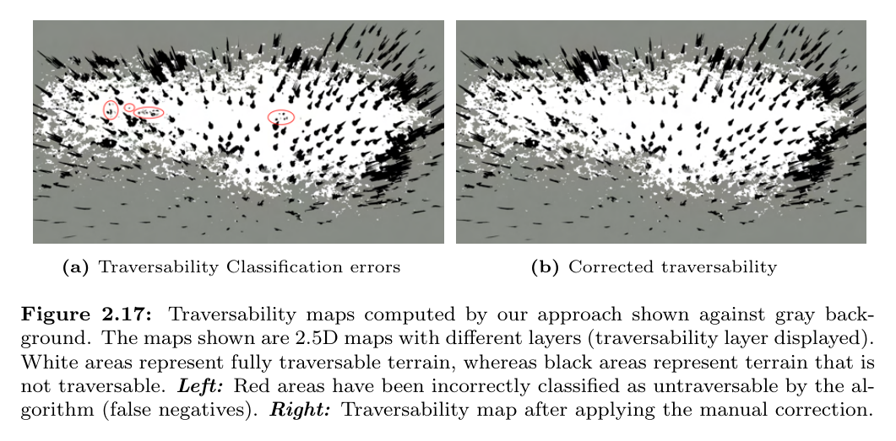
원문 Figure 2.17 · PDF p.72 — Figure 2.17: Traversability maps computed by our approach shown against gray back- ground. The maps shown are 2.5D maps with different layers (traversability layer displayed). White areas represent fully traversable terrain, whereas black areas represent terrain that is not traversable. Left: Red areas have been incorrectly classified as untraversable by the al- gorithm (false negatives). Right: Traversability map after applying the manual correction.
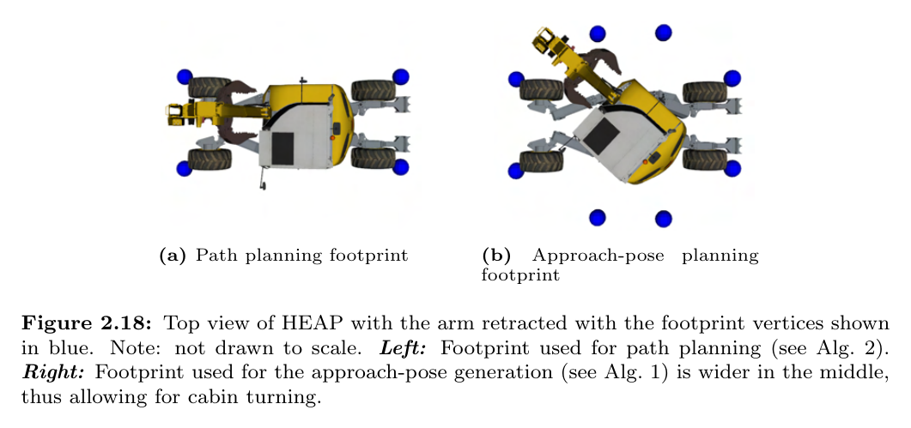
원문 Figure 2.18 · PDF p.73 — Figure 2.18: Top view of HEAP with the arm retracted with the footprint vertices shown in blue. Note: not drawn to scale. Left: Footprint used for path planning (see Alg. 2). Right: Footprint used for the approach-pose generation (see Alg. 1) is wider in the middle, thus allowing for cabin turning.
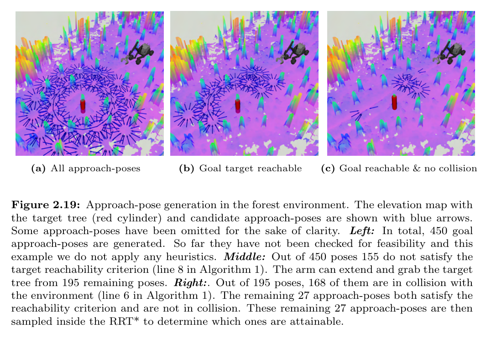
원문 Figure 2.19 · PDF p.75 — Figure 2.19: Approach-pose generation in the forest environment. The elevation map with the target tree (red cylinder) and candidate approach-poses are shown with blue arrows. Some approach-poses have been omitted for the sake of clarity. Left: In total, 450 goal approach-poses are generated. So far they have not been checked for feasibility and this example we do not apply any heuristics. Middle: Out of 450 poses 155 do not satisfy the target reachability criterion (line 8 in Algorithm 1). The arm can extend and grab the target tree from 195 remaining poses. Right:. Out of 195 poses, 168 of them are in collision with the environment (line 6 in Algorithm 1). The remaining 27 approach-poses both satisfy the reachability criterion and are not in collision. These remaining 27 approach-poses are then sampled inside the RRT* to determine which ones are attainable.
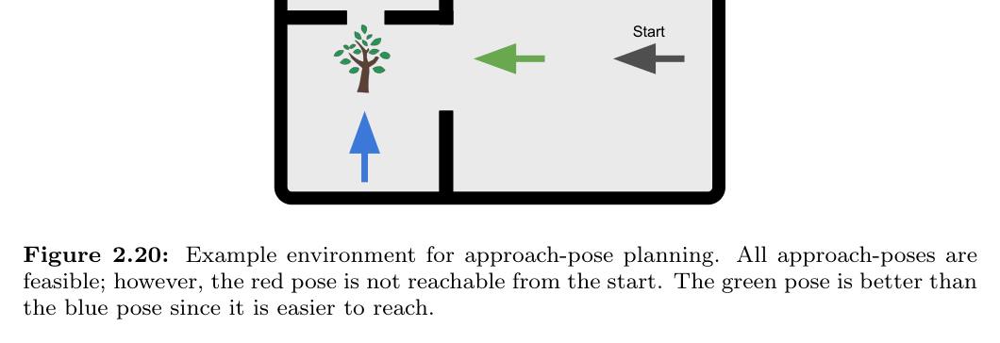
원문 Figure 2.20 · PDF p.76 — Figure 2.20: Example environment for approach-pose planning. All approach-poses are feasible; however, the red pose is not reachable from the start. The green pose is better than the blue pose since it is easier to reach.
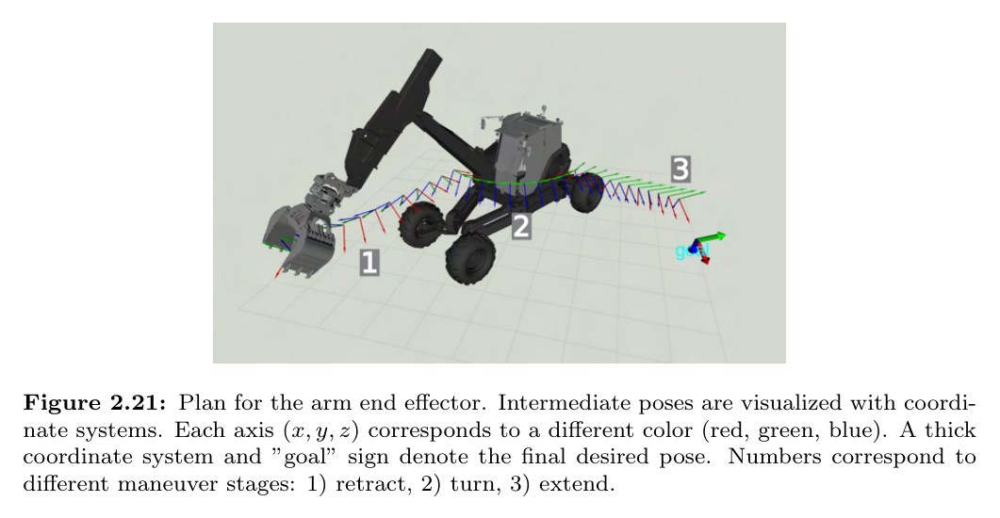
원문 Figure 2.21 · PDF p.78 — Figure 2.21: Plan for the arm end effector. Intermediate poses are visualized with coordi- nate systems. Each axis (x, y, z) corresponds to a different color (red, green, blue). A thick coordinate system and ”goal” sign denote the final desired pose. Numbers correspond to different maneuver stages: 1) retract, 2) turn, 3) extend.
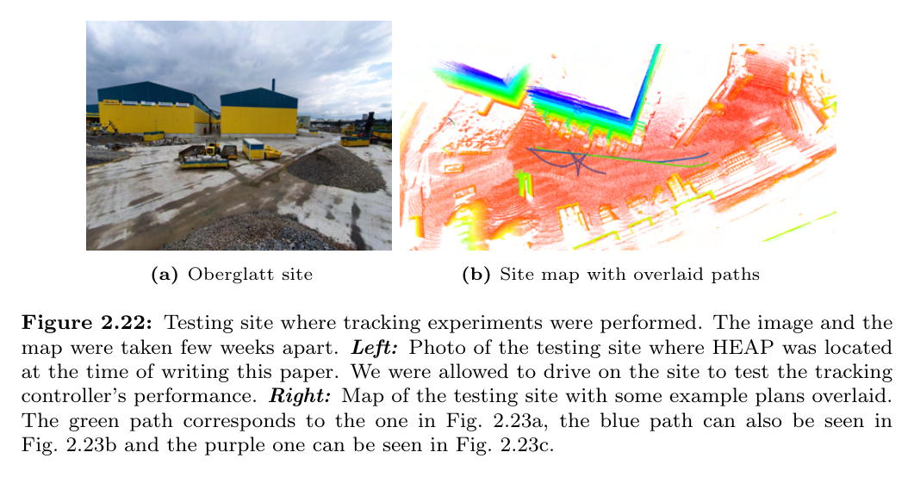
원문 Figure 2.22 · PDF p.79 — Figure 2.22: Testing site where tracking experiments were performed. The image and the map were taken few weeks apart. Left: Photo of the testing site where HEAP was located at the time of writing this paper. We were allowed to drive on the site to test the tracking controller’s performance. Right: Map of the testing site with some example plans overlaid. The green path corresponds to the one in Fig. 2.23a, the blue path can also be seen in Fig. 2.23b and the purple one can be seen in Fig. 2.23c.
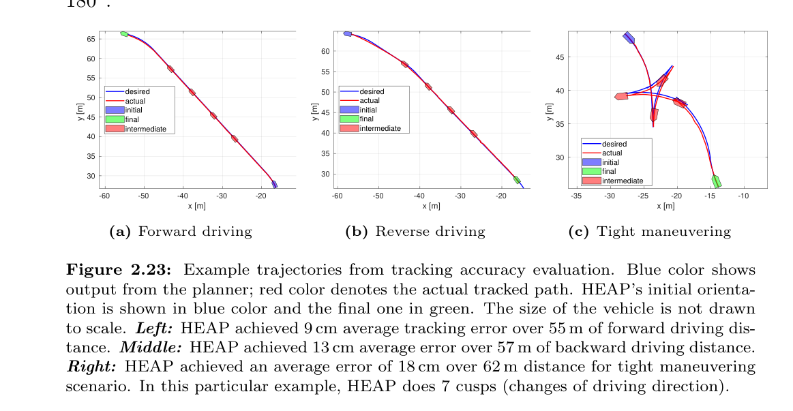
원문 Figure 2.23 · PDF p.79 — Figure 2.23: Example trajectories from tracking accuracy evaluation. Blue color shows output from the planner; red color denotes the actual tracked path. HEAP’s initial orienta- tion is shown in blue color and the final one in green. The size of the vehicle is not drawn to scale. Left: HEAP achieved 9 cm average tracking error over 55 m of forward driving dis- tance. Middle: HEAP achieved 13 cm average error over 57 m of backward driving distance. Right: HEAP achieved an average error of 18 cm over 62 m distance for tight maneuvering scenario. In this particular example, HEAP does 7 cusps (changes of driving direction).
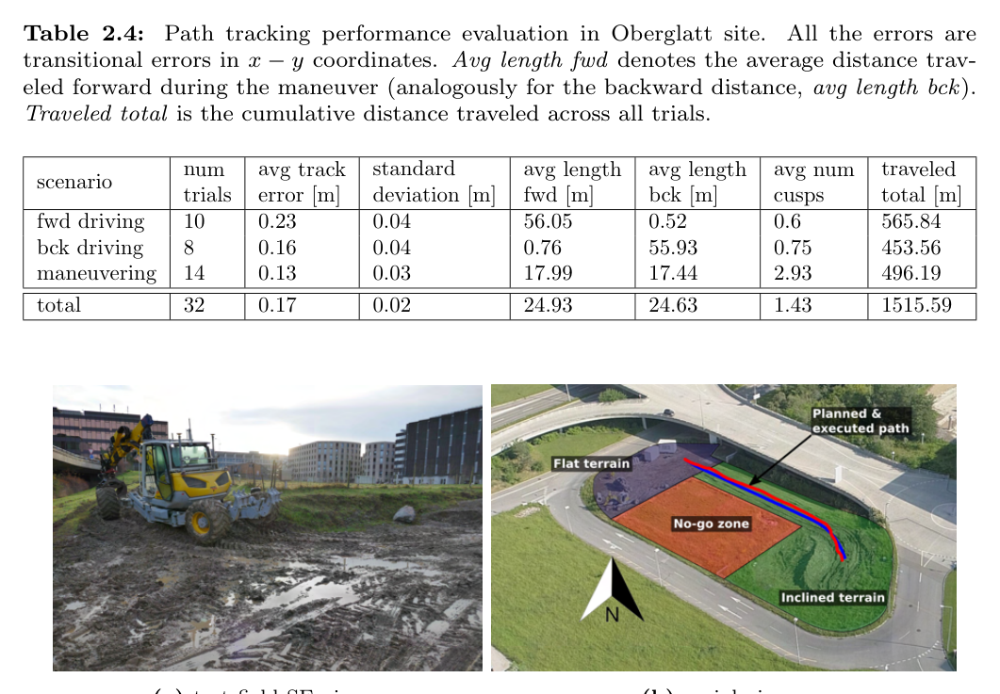
원문 Table 2.4 · PDF p.80 — Table 2.4: Path tracking performance evaluation in Oberglatt site. All the errors are transitional errors in x −y coordinates. Avg length fwd denotes the average distance trav- eled forward during the maneuver (analogously for the backward distance, avg length bck). Traveled total is the cumulative distance traveled across all trials.원문 Figure 2.24 · PDF p.80 — Figure 2.24: Photos of our testing field, not all images were taken at the same time. Left: View looking southeast with the machine parked. The area shown is flat. Right: Aerial view of the field with different classes of terrain labeled. We overlay the planned (blue) and executed (red) path from one tracking experiment (see Fig. 2.25a).원문 Figure 2.25 · PDF p.81 — Figure 2.25: Experiments were conducted to determine the tracking accuracy of our chassis control approach. In blue color, the planner’s desired plan has been shown; red color denotes the actual tracked path. The initial orientation of the excavator is shown in blue color and the final one in red. The size of the vehicle is not drawn to scale.원문 Figure 2.26 · PDF p.83 — Figure 2.26: Joint path and approach-pose planning for the forest alley scenario. Tree density is defined as a number of trees per m2. Top Left: Top view of the random forest with the path and approach-pose planned. The harvester starts from the blue arrow to grab the tree encircled orange. Path is shown in green and the final approach-pose in red. Black dots represent the trees and red dots are the remaining target trees. Top Right: Percentage of feasible targets and the success rate as the forest density increases. Success rate is calculated as number of successful planning attempts divided by the number of feasible targets. Bottom Left: Planning times against varying forest density, note the logarithmic scale on the y axis Bottom Right: Path lengths as a function of varying forest density.원문 Table 2.5 · PDF p.84 — Table 2.5: Number of feasible (attainable) targets together with the total number of planning attempts for each forest density. We show the data for forest alley and unstructured forest scenario.원문 Figure 2.27 · PDF p.85 — Figure 2.27: Joint path and approach-pose planning for the unstructured forest scenario. Top Left: Top view of the random forest with the path and approach-pose planned. See Fig. 2.26 for explanations of the colors in the image. Top Right: Success rate as the forest density increases. Feasibility rate and success rate are calculated the same way as for Fig. 2.26. Bottom Left: Planning times against varying forest density, note the logarithmic scale on the y axis Bottom Right: Path lengths as a function of varying forest density.원문 Table 2.6 · PDF p.86 — Table 2.6: Planning metrics for the forest patch scenario (averaged over 10 trials).원문 Figure 2.28 · PDF p.86 — Figure 2.28: Obstacle map for the forest patch sce- nario. Obstacles are shown in black color whereas free space is shown in gray color. The targets are denoted with red cylinders원문 Figure 2.29 · PDF p.87 — Figure 2.29: 6 m by 6 m point cloud patches from the testing site. Red corresponds to the lowest and purple to the highest elevation. Tree detections are shown with green cylinders. Tree detection has failed for snapshots 5 and 12 (marked with black arrows).원문 Figure 2.30a · PDF p.87 — Fig. 2.30a shows the first forest patch together with tree detections. The patch has about 246 (both evergreen and deciduous) trees, and the tree detector correctly detected 210 of them. There were 14 false positives, and 36 trees were not detected (false negatives), which amounts to a precision of 94 % and recall rate of about 85 %. The point cloud of the second forest patch and detected trees are shown in Fig. 2.30b. In total, there are 163 (spruce) trees, and the tree detector correctly detected 143 of them. There were six false positives, and 20 trees were not detected, which amounts to a precision of 96 % and recall rate of about 88 %. The last forest patch is shown Fig. 2.31. The Forest patch has about 285 trees (all deciduous trees). The tree detector detected in원문 Table 2.7 · PDF p.88 — Table 2.7: Tree detection evaluation.원문 Figure 2.30 · PDF p.88 — Figure 2.30: Maps and tree detections for two forest patches. Detected trees are de- noted with black bounding boxes. Red/yellow color corresponds to the lowest elevation and blue/purple to the highest. Left: Forest with both evergreen and deciduous trees. Note the heavy clutter towards the edges of the map. Right: Forest with mainly spruce trees.원문 Figure 2.31 · PDF p.89 — Figure 2.31: Forest patch and detected trees denoted with black bounding boxes. The forest patch consists of deciduous trees.원문 Figure 2.32 · PDF p.89 — Figure 2.32: The trajectories from the localization field experiments overlaid with the map.원문 Figure 2.33 · PDF p.90 — Figure 2.33: The trajectories from the localization field experiments viewed from above. Forest 1 and Forest 2 are datasets from two different forests.원문 Figure 2.34 · PDF p.91 — Figure 2.34: Locations for mapping ground truth evaluation. Left: Aerial photo of the emergency responders training ground, Wangen and der Aare. Image taken from https: //www.mediathek.admin.ch/media/image/da1c1259-8d9a-430a-893d-d325de139149 Right: Forest patch where the mapping accuracy was evaluated. The forest in the photo is an old forest.원문 Figure 2.35 · PDF p.92 — Figure 2.35: Map of the emergency responders training ground, Wangen an der Aare, Switzerland. The ground truth map is shown in black(from Leica RTC360), and in red, the cartographer map is shown. The green circle shows an example of good alignment, the dotted circle shows an example of bad alignment, and the green square shows an example of changes between two mapping sessions. The data was collected a couple of weeks apart.원문 Figure 2.36 · PDF p.93 — Figure 2.36: Close up view of encircled areas from Fig. 2.35. Ground truth is shown in black and cartographer map shown in red. Left: Example of good alignment. Note how building edges from different maps snap well onto each other. Middle: Example of poor alignment. Note how the building walls are far apart from each other. Right: Changes between the dataset collections. Note the black tents in the ground truth map and the red firefighting trailer in the cartographer map.원문 Figure 2.37 · PDF p.93 — Figure 2.37: Aligned forest maps. Ground truth map shown in black color where the cartographer map has been shown in red color. Left: Top view of the aligned maps. Right: Close up image of the aligned maps. Note how tree trunks nicely fit together.원문 Figure 2.38 · PDF p.94 — Figure 2.38: Top view trajectory estimate from cartographer (brown) aligned with the ground truth trajectory (blue). Left: Trajectory estimates for data collection at Wangen training site. Note how the error is bigger in the area where maps in Fig. 2.35 are not well aligned. Right: Trajectory estimates for data set collection in the forest 3.원문 Figure 2.39 · PDF p.95 — Figure 2.39: HEAP approaching wooden logs at our testing field. We do not show the rest of the maneuver for the sake of brevity. The reader is encouraged to watch the video.원문 Figure 2.40 · PDF p.96 — Figure 2.40: Snapshots of an operational cycle between grabbing two trees. HEAP re- positioning the base close to the tree (snapshots 1-6) followed by scanning the environment and building a local map (snapshots 7-9). Finally, HEAP grabs the tree by extending the arm (snapshots 10-12) and retracting it (snapshots 13-15). After retracting the arm, the harvester is ready to grab the next tree and whole cycle repeats.원문 Figure 2.41 · PDF p.101 — Figure 2.41: Forest scene with large tree trunks, no clutter and low branch density. The elevation map nicely captures the tree trunks and the forest ground.원문 Figure 2.42 · PDF p.101 — Figure 2.42: Scene with no clutter, but higher branch density compared to the previous scene. Besides the big tree trunks many smaller trees with trunk diameter less than 10 cm are present. One can clearly see a limitation of our algorithm, since many of the smaller trees are not well captured in the map at 10 cm resolution.원문 Figure 2.43 · PDF p.101 — Figure 2.43: Cluttered scene without vegetation. Compared to the Fig. 2.42, tree trunks in this scene are thicker and better captured in the elevation map. High branch density does not seem to pose the problem for the conversion algorithm as long as there is enough ground data in the point cloud.원문 Figure 2.44 · PDF p.102 — Figure 2.44: Scene with low vegetation and low clutter. One can see that the elevation map does not contain any artifacts. The vegetation causes the map to be somewhat rougher compared to the forest ground without the vegetation.원문 Figure 2.45 · PDF p.102 — Figure 2.45: Medium clutter forest patch with ground vegetation. We can see that the surface of the elevation map looks somewhat rougher compared to the Fig. 2.44. The algo- rithm successfully captures the tree trunks and filters out some thin trees.원문 Figure 2.46 · PDF p.102 — Figure 2.46: High clutter scene with lots of vegetation. We can see that the thick vegetation corrupts the elevation map and causes bumps and roughness in it. Thick tree trunks are still well visible in the map.원문 Figure 2.47 · PDF p.103 — Figure 2.47: Combined scene with medium vegetation clutter and trees. Branches reaching all the way to the ground effectively inflate the trunk of the tree which can be seen in the middle of the elevation map (big blobs to the left of the tree trunk).원문 Figure 2.48 · PDF p.103 — Figure 2.48: Elevation maps computed using our point cloud to elevation map conversion algorithm with different cluster tolerance parameter. One can observe that the lower cluster tolerance better filters out the vegetation and clutter.원문 Figure 2.49 · PDF p.104 — Figure 2.49: 6 m by 6 m point cloud patches where detection algorithm failed. Red cor- responds to the lowest and purple to the highest elevation. Tree detections are shown with transparent boxes. The patches come from three different maps that were used for detection accuracy evaluation (see Sec. 2.9.3.원문 Figure 3.2 · PDF p.115 — Figure 3.2: Contact indicator c(t) variables used for optimizing over the gait. Each contact indicator variables takes the value 1 (red area) if the foot is in contact and the value 0 if it is not (green area). Polynomials in splines are kept constant except at the transitions between the swing and stance phase (darker red area). Splines are connected at the nodes (black dots); note that the number of nodes per phase is always constant and not dependent on the duration of the polynomials in between.원문 Figure 3.3 · PDF p.116 — Figure 3.3: Left: Coordinate frames used for planning with HEAP. Each limb has a coordinate frame attached to the EE. Legs of the excavator are denoted with abbreviations, LF stands for Left Front, RH for Right Hind etc. x axis is shown in red color, y in green and z in blue. Middle: OS denotes the origin of shovel contact coordinate system. The x, y, z axis of coordinate systems are denoted with ax,ay,az respectively. The shovel orientation constraint enforces that the ax vector is parallel with the normal vector n. Right: OWi is in the center of the wheel, ay is axis of rotation. OWc,i is the contact point of the ith wheel. For modeling purposes, we use a thin disc wheel model.원문 Figure 3.4 · PDF p.118 — Figure 3.4: Gaits used on HEAP. Color denotes limb that is in contact, and white space denotes that the limb is in the swing phase. All timings are normalized. Left: Driving gait. Middle: Walking without the arm. Right: Walking with legs and the arm.원문 Figure 3.6 · PDF p.119 — Figure 3.6: Left to Right: HEAP crossing a 3m wide gap using the stepping gait. The coordinate frame marks the goal position. The arm is facing forward initially, but it has to be turned back to step over the gap successfully. This behavior can be seen in the middle figure; HEAP is turning the arm 180 degrees to establish contact on the left side of the gap and thus be able to step to the right side.원문 Figure 3.7 · PDF p.120 — Figure 3.7: Left to Right: HEAP climbing on a 1m block using the stepping gait. The machine exhibits the same behavior as for the gap.원문 Figure 3.8 · PDF p.120 — Figure 3.8: Minimal distance of the CoM to the edge of the support polygon while per- forming the maneuver shown in Fig. 3.10. Negative distance means that CoM is inside the polygon. Robot remains stable as long as the CoM stays inside the green region. Blue CoM trajectory was obtained with ϵ = 0.0 and the red one with ϵ = 0.5. We define S to be the stability margin.원문 Figure 1 · PDF p.120 — figure 1, HEAP is given a diagonally shifted goal position. Note how the optimizer automatically discovers crab steering mode without specifying any further details. In Sub-figure 2a - 2d HEAP is driving to a goal position located on the side. It cannot just drive directly to it, nor it can crab steer to it. To reach the goal, HEAP has to make cusps and switch between the forward and reverse driving, which is the solution that our planner finds. Note that because of the kinematic configuration of the legs, it is not possible to turn the wheels in place without violating the lateral slip constraint. For planning the driving maneuvers, the optimization takes ten times shorter than the time horizon of the plan.원문 Figure 3.9 · PDF p.122 — Figure 3.9: Left to Right: HEAP moving from (x, y) = (5, 0) m to (x, y) = (0, 0) m while simultaneously optimizing over the gait timings. Left: The base has to move where the coordinate system axis are. Middle: Even with the fully extended arm and tilted base, it is still too far from the goal position to reach it without changing the gait timings. Right: The contact timings change and the contact is broken.원문 Figure 3.10 · PDF p.122 — Figure 3.10: Left: HEAP using the walking gait to turn in place 90 degrees. The initial and the final pose are shown opaque, while the poses in between are shown transparent. The arrow shows the turning direction. Right: Snapshot from a turning motion. Note how the machine uses the arm as a counterweight to keep balance.원문 Figure 3.11 · PDF p.124 — Figure 3.11: Left: Convex polygon and the same polygon in orange color shrunk by a factor of 0.6, Middle: Not centered convex polygon, Right: Centered convex polygon. c denotes the centroid of the polygon, pCOM the center of mass, pi is the ith support point.원문 Figure 4.1 · PDF p.129 — Figure 4.1: Top: A walking excavator has five limbs; an arm, and four legs with a wheel at the end of each leg. They usually operate in muddy and slippery conditions, which requires motion plans with large stability margin. Bottom: Hydraulic Excavator for Autonomous Purpose (HEAP) balancing on three legs while performing a stepping maneuver. A video demonstrating all the motions accompanies this submission.원문 Figure 4.2 · PDF p.133 — Figure 4.2: Difference in velocity magnitude between Left Front (LF) and Right Front (RF) wheel during the sideways driving maneuver. The base command was to drive left. It can be seen that the introduction of the cost reduces speed difference by an order of magnitude over the trajectory duration. Motions that require less velocity difference are easier for the controller to track.원문 Figure 4.4 · PDF p.135 — Figure 4.4: Schematic of HEAP with all joints and their axes. Joint notations on RF and Right Hind (RH) legs are omitted for the sake of clarity. They have the same DoF’s as the LF and Left Hind (LH) leg that are shown. Joints 1, 2, 9, 14 and 15 cannot be torque controlled. Joint 12 has a very high and nonlinear static friction which makes the torque control hard. The rest of the joints can be torque controlled. Figure adapted from Jud et al., 2021b.원문 Table 4.1 · PDF p.136 — Table 4.1: WBC task setup. Smaller number indicates higher priority.원문 Figure 4.5 · PDF p.139 — Figure 4.5: Left: Top view of a wheel tracking the desired trajectory (shown in blue color). The desired position and orientation of the wheel center at time t are denoted with a coordinate system W d. Coordinate system W denotes the current position and orientation. Wheel axes are shown in red and green colors. The yaw error δ from Equation (4.14) is denoted with δ in the Figure. Position error along the rolling direction is shown with a full black line and denoted with symbol ew. Right: The wheel frame W is defined to lie on the origin of the wheel. The axis ey is defined as the wheels rotation axis, and the axis ex is defined as the direction perpendicular to ey and the terrain normal n. The wheel moves in the direction of the axis ex. Note that the wheel frame W does not rotate with the wheel.원문 Figure 4.6 · PDF p.141 — Figure 4.6: Torques in LF and RF flexion joints during the swing phases while performing stepping experiment. It can be seen the torques for swing limb joints computed by the WBC do not substantially differ from the actual torques when tracking the velocities from the IK controller.원문 Figure 4.7 · PDF p.142 — Figure 4.7: Left to Right: HEAP driving forward over a small hill. The front leg adapts its height to the ground height, despite motion planner producing plans under the flat ground assumption.원문 Figure 4.7 · PDF p.142 — Fig. 4.7 shows the terrain adaptive control behavior induced by our controller. Fig. 4.8 shows the tracking performance. The planner thinks that the ground is flat and comes up with a plan to move forward. However, there is a small hill in the way, and the controller adjusts the front leg position to keep the base upright. This behavior naturally emerges from the task prioritization given in our controller (see Section 4.3.1). Without the torque control in the FE joints, such adaptation would be hard to achieve.원문 Figure 4.8 · PDF p.143 — Figure 4.8: Adaptive terrain behavior. Note how the base height, roll α and pitch β are tracked accurately over uneven terrain (see Fig. 4.7). To achieve the base tracking, the controller abandons tracking for the LF end-effector height and the FE joint position. Such a behavior is achieved through task prioritization.원문 Figure 4.9 · PDF p.143 — Figure 4.9: Left to Right: HEAP performs a driving maneuver. The base is commanded to move forward and left (frames 1-3). Subsequently, we command the machine to drive back to the starting point (frames 4-6). The planning and control pipeline naturally discovers the crab steering mode of the machine.원문 Figure 4.10 · PDF p.144 — Figure 4.10: Left to Right: HEAP performs a stepping maneuver and reorients its base by 30◦. The gait pattern requires it to lift the legs in the following order { LH, LF, RH, RF }. The machine cannot complete the maneuver without using the arm for balancing (e.g., in snapshot 3).원문 Figure 4.11 · PDF p.144 — Figure 4.11: Left: Tracking in x −y plane for the base and end-effectors while performing turning maneuver shown in Figure 4.10. The coordinate frame (full lines) denotes starting pose while frame shown in dashed lines shows the end pose. The desired base pose is shown in cyan color, while the desired trajectory of each leg is shown in brown color. The desired trajectory for the arm is shown in blue color, while the actual trajectory is shown in the magenta color. Middle: Tracking performance for the stepping sideways maneuver (shown in video). The machine is commanded to step sideways two times by 0.5 m Right: Driving maneuver, shown in Figure 4.9. HEAP was commanded to drive front and right and then to return to the starting point.원문 Figure 5.1 · PDF p.149 — Figure 5.1: Hydraulic Excavator for Autonomous Purpose (HEAP) navigating a variety of different terrains (refer to accompanying video for more examples). Left-up: Driving up a 2 m service ramp. Right-up: hole terrain, traversing over a hole via 1 m wide passage which is too narrow for both legs. Left-middle: rough terrain, navigating a terrain with roughness of ±1.5 m. Right-middle: step terrain, stepping on a 1 m high block. Left-down: Stepping over 0.5 m high wall. Right-down: gap terrain, crossing a 2 m wide gap.원문 Figure 5.3 · PDF p.153 — Figure 5.3: Roadmap vertices (red spheres) and edges (blue lines). Each vertex represents an end-effector position in R3. Left: Roadmap shown for the legs of a walking excavator. Shown are 300 vertices and about 2000 edges. Right: Roadmap for the arm. Shown are 1000 vertices and about 8000 edges.원문 Figure 5.4 · PDF p.155 — Figure 5.4: Addition of a new node into the RRT tree. Red circles and full black lines are nodes and paths that make the current RRT tree. The newly sampled node (green) has to be connected to the rest of the tree. For a successful connection, all subnodes on the connecting path (small green circles) have to be valid.원문 Figure 5.4 · PDF p.155 — Fig. 5.4 depicts the feasibility checking. Upon drawing a new sample (large green node) as described in step 1, we compute a RS connection (dotted line) to the new node, as described in step 2. Subsequently, the dotted line is dis- cretized into subnodes (small green circles) using an RS interpolation method Sucan, Moll, and Kavraki, 2012. Next, for each subnode we generate full 6 DoF pose using Alg. 3. Finally, each subnode undergoes feasibility checking, ensuring that the robot is statically stable and can establish enough contacts with the ground. In case a feasibility check passes for every subnode, the RRT adds the new state and the connecting path to the tree. It is crucial to원문 Figure 6.1 · PDF p.167 — Figure 6.1: a) HEAP overcomes a virtual bridge too narrow to drive over it. Hence, the stepping behavior emerges. We did not dig a ditch in our testing field. However, the map supplied to the planner contains it. Left: HEAP driving on three wheels over the bridge. Right: Visualization of the map the planner sees. b) ANYmal climbing consecutive steps. c) ANYmal on wheels stepping up the stairs (plan visualization). All the motions are also shown in the accompanying video https://youtu.be/4eqq4Ucl92o.원문 Figure 6.3 · PDF p.175 — Figure 6.3: Roadmap vertices (red spheres) and edges (blue lines). Each red dot represents an end-effector position in R3. a) Roadmap for ANYmal robot (only vertices shown). Each leg has 5000 vertices in the roadmap. b) HEAP legs have 300 vertices and about 2000 edges in the roadmap. c) HEAP arm with 1000 vertices and about 8000 edges shown. d) Collision spheres approximating the geometry of the legged robot. We use ten balls of a radius of 20 cm for the base, two balls of 7 cm radius for each knee, and three balls of 3.5 cm radius for each shank.원문 Figure 6.4 · PDF p.176 — Figure 6.4: Terrain preprocessing module overview.원문 Figure 6.5 · PDF p.177 — Figure 6.5: Intermediate steps in terrain preprocessing for stepping stones terrain. a) Raw elevation map input. b) Elevated mean (see Appendix 6.11.1). c) Untraversable terrain shown in black color. d) Filtered terrain, used by the base pose selector module.원문 Figure 6.6 · PDF p.179 — Figure 6.6: Addition of a new node into the RRT tree (expansion step). Red circles and full black lines are nodes and paths that make the current RRT tree. The newly sampled node (green) has to be connected to the rest of the tree. For a successful connection, all subnodes on the connecting path (small green circles) have to be valid. For a legged robot, the subnodes are connected using One-Step Motions (OSMs), which is illustrated in Fig. 6.7.원문 Figure 6.6 · PDF p.179 — Fig. 6.6 depicts the feasibility checking. Upon drawing a new sample (large green node) as described in Sec. 6.3.3.1, we compute a RS connection (dotted line) to the new node, as described in Sec. 6.3.3.2. Subsequently, the dotted line is discretized into subnodes (small green circles) using an RS interpolation method Sucan, Moll, and Kavraki, 2012. The subnodes do not necessarily be equidistant. Next, for each subnode we generate full 6 DoF pose using the filtered elevation layer inside the grid map. Finally, each subnode undergoes feasibility checking, ensuring that all criteria above are satisfied. If every subnode is feasible, the new state and the connecting path are added to the tree. For detailed description, refer to Sec. 6.4.원문 Figure 6.8 · PDF p.182 — Figure 6.8: FSS computation on stairs (white shows traversable terrain, black un- traversable). Left: Base and nominal hip positions (blue spheres). Middle: Desired footholds (red spheres) computed using nominal hip positions. Right: FSS with leg config- urations.원문 Figure 6.9 · PDF p.183 — Figure 6.9: Contact schedule computation for swing orders (LF, RF, LH, RH) and (LF, RF, RH, LH). The black dots on the top represents the OSM states. Each red ar- row points from the start to LCB, and each blue one from the goal to ECC. Swing phases generated from Alg. 5 (see Appendix 6.11.2) are shown as gray rectangles. There exist many other feasible contact schedules (e.g., move swing phase to the left, increase the size of swing phase).원문 Figure 6.10 · PDF p.183 — Figure 6.10: OSM with length = 20 cm created on stairs (left) and obstacles (right). Terrain color represents the height value (white: maximum, blue: minimum). The base trajectory is shown in green, limb trajectories in separate colors. The spheres on the terrain show liftoff and touchdown locations.원문 Figure 6.11 · PDF p.187 — Figure 6.11: The ground clear- ance function. It gradually in- creases to a user-defined value and then gradually decreases. Such a shape minimizes violation in the ini- tial and terminal swing phases since feet cannot change state instantly.원문 Table 6.1 · PDF p.190 — Table 6.1: WBC task setup. Smaller number indicates higher priority.원문 Figure 6.12 · PDF p.191 — Figure 6.12: HEAP joints. Blue joints are always frozen and red joints are always velocity controlled. Green joints are torque controlled when corresponding limb is in contact, velocity controlled otherwise. Figure adapted from Jud et al., 2021b.원문 Figure 6.13 · PDF p.192 — Fig. 6.13 shows the structure of combined MPC and VMC controllers. The MPC receives a trajectory Γ from the SBP. Optimized roll, pitch and height are fed to VMC which then computes HFE and TELE joint torques to achieve desired base pose. Lower level controller selects joint control mode based on the contact schedule CS. All joints are velocity controlled except for HFE and TELE if the corresponding limb is in contact. Both torque and joint velocity commands are filtered using exponential smoothing to remove small jumps. MPC is tuned to accurately follow the plan from the SBP. MPC uses a prediction horizon of 15 s, which is enough to correct for small deviations around the long term plan Γ. In contrast, the VMC control loops are tuned for good disturbance rejection since VMC sees the terrain as a disturbance. VMC uses a state machine to handle late touchdown events. A swing leg that원문 Figure 6.13 · PDF p.192 — Figure 6.13: HEAP control system with layer execution times on the right. MPC tracks trajectory Γ from SBP us- ing a kinematic model from Eq. 6.17. VMC computes torques for Hip Flexion- Extension and arm Telescopic joint to track roll, pitch and, base height setpoints from the MPC. Joint control mode is se- lected based on contact schedule.원문 Figure 6.14 · PDF p.194 — Figure 6.14: Terrain processing runtime analysis with 6 threads. Left: Normal estimation runtimes for 8 × 8 meters map (resolution = 3 cm) and different radii. Middle: Total runtimes for different map sizes at a resolution of 3 cm. Right: Runtime percentage of each component.원문 Table 6.2 · PDF p.196 — Table 6.2: Terrain features for planner evaluation.원문 Figure 6.16 · PDF p.196 — Figure 6.16: Contact schedule visualization (cyan: contact phase, white: swing phase). Left: planner discovers cyclic contact schedule when walking on the flat ground. Right: planner uses a highly acyclic gait to walk on the stepping stones.원문 Table 6.3 · PDF p.197 — Table 6.3: SBPs success rate for ANYmal on different terrain types, difficulty levels, and planning times. The top row shows the minimal planning time where no failures occur (e.g., for the hard difficulty level, with 2 s planning time, the SBP finds a solution in all terrains).원문 Figure 6.18 · PDF p.199 — Figure 6.18: ANYmal system architecture. Navigation PC only requests a local height map generated using elevation mapping from Jetson. Once the SBP computes a plan, it is sent to the Locomotion PC, where MPC tracks it.원문 Table 6.4 · PDF p.201 — Table 6.4: SBPs success rate for ANYmal on wheels across different terrain types, difficulty levels, and planning times. The top row shows the minimal planning time where no failures occur (e.g., for the hard difficulty level, with 5 s planning time, the SBP finds a solution in all terrains).원문 Figure 6.26 · PDF p.210 — Figure 6.26: Different swing orders generate different support polygons in an OSM. In the upper one, the robot swings first the LF leg and then the RH one, which makes the Support Polygon (SP) large enough. The swing limb order is reversed in the lower option, and this makes the SP very small (highlighted in red) once the LF leg breaks contact.